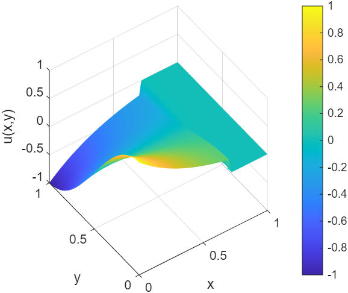
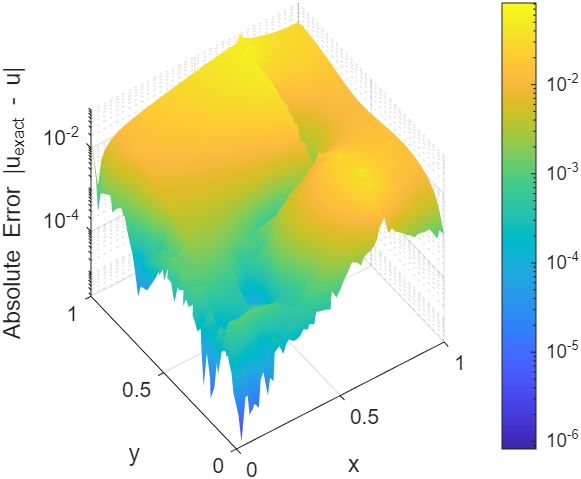
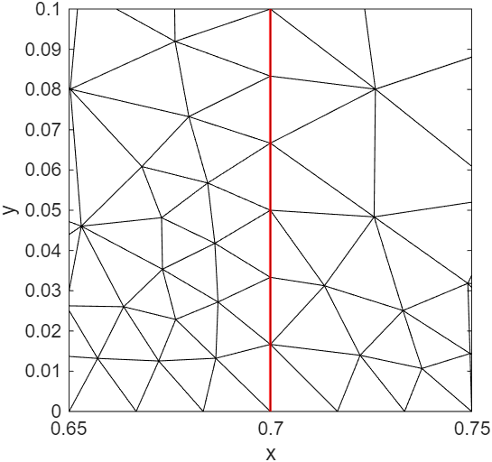
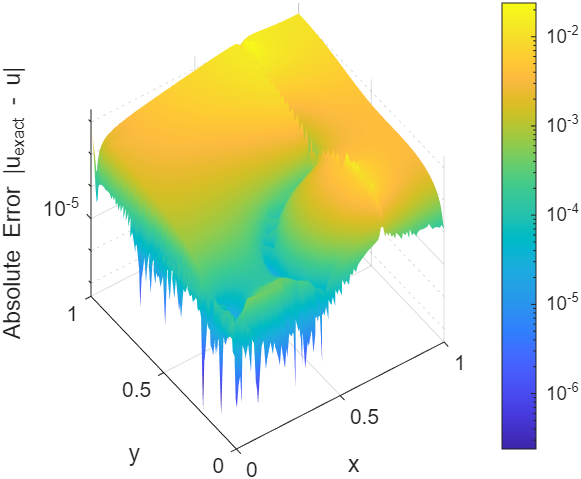
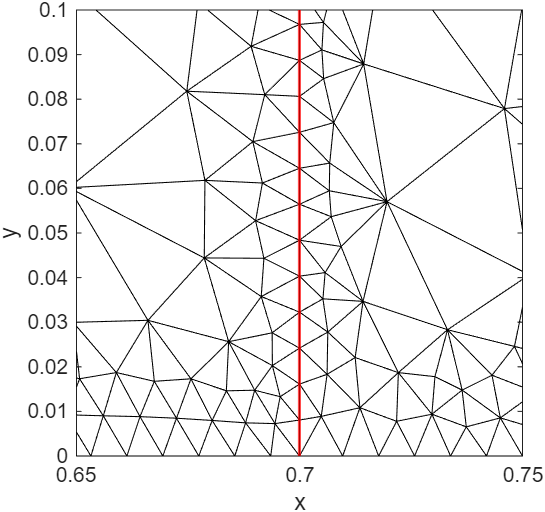

Paper_eng_2
A Symmetrizing Preconditioner for Finite-Volume Jacobians of Quasilinear Elliptic Equations
Kibeom Kim1, Young Jun Yoon2*
1Independent Researcher, Republic of Korea (kohmeutto@gmail.com)
2School of Electronic and Mechanical Engineering, Gyeongkuk National University, Andong, Republic of Korea (yjyoon@gknu.ac.kr)
*Correspondence: Young Jun Yoon
Keywords: Symmetrizing preconditioner; Quasilinear elliptic equations; Discrete Hodge decomposition; Inexact Newton method; Finite volume method
Abstract
Finite-volume discretization of quasilinear elliptic equations with state-dependent diffusion induces non-normality in the Jacobian. Specifically, the derivative of the diffusion coefficient with respect to the state variable is multiplied by the gradient of the state. This product acts as an effective drift and generates an advection-like skew-symmetric component. Consequently, this asymmetry reduces the numerical stability of both direct and iterative linear solvers.
상태 의존적 확산을 동반하는 준선형 타원형 방정식의 유한체적 이산화는 야코비안에 비정규성을 유발한다. 구체적으로, 상태 변수에 대한 확산 계수의 미분은 상태 변수의 기울기와 곱해진다. 이 곱은 유효 표류로 작용하여 이류 형태의 반대칭 성분을 생성한다. 결과적으로 이러한 비대칭성은 직접 및 반복 선형 솔버의 수치적 안정성을 저하시킨다.
This study proposes a three-stage symmetrizing preconditioner. It diagnoses the source of asymmetry, locally adapts the mesh, and globally rebalances the discrete operator. The first stage identifies the advection-like origin of the asymmetry. This is achieved through a residual operator, defined as the difference between a linear operator and its formal adjoint. The second stage uses a commutator-based local indicator. This indicator drives r-adaptive mesh relocation via a weighted graph Laplacian.
본 연구는 3단계 대칭화 전제조건자를 제안한다. 이는 비대칭성의 원인을 진단하고, 국소적으로 격자를 적응시키며, 전역적으로 이산 연산자의 재균형을 맞춘다. 첫 번째 단계는 비대칭성의 이류 형태적 기원을 식별한다. 이는 선형 연산자와 그 공식 수반의 차이로 정의되는 잔차 연산자를 통해 이루어진다. 두 번째 단계는 교환자 기반의 국소 지표를 사용한다. 이 지표는 가중 그래프 라플라시안을 통해 r-적응형 격자 재배치를 유도한다.
The third stage introduces an edge-wise logarithmic ratio indicator. This indicator possesses a closed-form equivalence to the sum of a geometric volume ratio and a one-dimensional line integral of the drift-to-diffusion ratio. Additionally, a discrete Hodge decomposition splits this indicator into irrotational and solenoidal components. The irrotational component is absorbed by a diagonal scaling. The solenoidal component is subtracted from the Jacobian within an inexact Newton method.
세 번째 단계는 모서리 단위의 로그 비율 지표를 도입한다. 이 지표는 기하학적 체적 비율과 표류-확산 비율의 1차원 선적분의 합과 닫힌 형태의 동치성을 갖는다. 또한, 이산 호지 분해는 이 지표를 비회전 성분과 솔레노이드 성분으로 나눈다. 비회전 성분은 대각 스케일링에 의해 흡수된다. 솔레노이드 성분은 비정밀 뉴턴 기법 내에서 야코비안으로부터 감산된다.
A field-of-values argument bounds the spectrum of the preconditioned operator within a complex disk centered at unity. Numerical verification by the method of manufactured solutions on one- and two-dimensional problems with discontinuous diffusion confirms condition-number stabilization. The current method applies to steady quasilinear elliptic problems.
값의 영역 논증은 전제조건화된 연산자의 스펙트럼을 1을 중심으로 하는 복소 원판 내로 유계한다. 불연속 확산을 갖는 1차원 및 2차원 문제에 대해 제조해 기법을 통한 수치적 검증은 조건수 안정화를 확인한다. 본 기법은 정상 준선형 타원형 문제에 적용된다.
1. Introduction
Quasilinear elliptic equations with state-dependent diffusion arise in heat conduction, porous media flow, and semiconductor device modeling. In many such problems, the diffusion coefficient also exhibits discontinuities across material interfaces. The finite volume method (FVM) is a natural discretization for these problems because it preserves local conservation. However, the algebraic Jacobian produced by FVM inherits a structural asymmetry. This asymmetry originates not from the elliptic principal part, but from the linearization of the nonlinear coefficient. Differentiating the flux with respect to the state variable produces a term in which the derivative of the diffusion coefficient is multiplied by the gradient of the state. This product acts on the discrete operator as an effective drift. Consequently, the Jacobian decomposes into three parts: a self-adjoint diffusive part, a skew-symmetric advective part associated with the effective drift, and a zeroth-order reaction part. This skew-symmetric part is the algebraic origin of non-normality.
상태 의존적 확산을 동반하는 준선형 타원형 방정식은 열전도, 다공성 매질 유동 및 반도체 소자 모델링에서 발생한다. 이러한 문제들 중 다수에서 확산 계수는 물질 경계면을 가로지르며 불연속성을 보인다. 유한체적법(FVM)은 국소적 보존성을 유지하므로 이러한 문제에 대한 자연스러운 이산화 방법이다. 그러나 FVM에 의해 생성된 대수적 야코비안은 구조적 비대칭성을 물려받는다. 이러한 비대칭성은 타원형 주부분이 아닌 비선형 계수의 선형화에서 기인한다. 상태 변수에 대해 플럭스를 미분하면 확산 계수의 미분에 상태 변수의 기울기가 곱해진 항이 생성된다. 이 곱은 이산 연산자에서 유효 표류로 작용한다. 결과적으로 야코비안은 세 부분으로 분해된다. 이는 자기 수반 확산부, 유효 표류와 연관된 반대칭 이류부(skew-symmetric advective part), 그리고 0차 반응부이다. 이 중 반대칭부는 비정규성(non-normality) 의 대수적 기원이다.
A non-normal operator possesses a non-orthogonal eigenvector basis. Consequently, even with stable eigenvalues, perturbations can exhibit transient growth before asymptotic decay. The behavior of linear solvers depends on the field of values in addition to the spectrum. In iterative methods such as GMRES, the convergence rate decreases as the field of values enlarges. In direct methods such as sparse LU factorization, roundoff error propagation increases and pivot stability decreases. Ultimately, these characteristics lead to condition-number growth under mesh refinement. A common remedy is to add empirical relaxation factors or numerical viscosity. This restores robustness but alters the discrete equation. The heuristic removal of physically inherent advective terms biases the solution trajectory. Therefore, this study investigates an alternative approach that diagnoses and rebalances the discrete operator by purely algebraic means. By doing so, the original equation is preserved, and the conditioning of the linear system is improved.
비정규 연산자는 비직교 고유벡터 기저를 가진다. 따라서 고윳값이 안정적인 경우에도 섭동은 점근적으로 감쇠하기 전에 일시적으로 성장(transient growth) 할 수 있다. 선형 솔버의 거동은 스펙트럼뿐만 아니라 값의 영역(field of values)에 의해서도 결정된다. GMRES와 같은 반복 해법에서는 값의 영역이 확장될수록 수렴 속도가 감소한다. 희소 LU 분해와 같은 직접 해법에서는 반올림 오차의 전파가 증가하고 피벗 안정성이 감소한다. 결과적으로 이러한 특성은 격자 세분화에 따른 조건수 증가를 유발한다. 일반적인 해결책은 경험적인 이완 계수나 수치적 점성을 추가하는 것이다. 이는 강건성을 회복시키지만 이산 방정식을 변형시킨다. 물리적으로 내재된 이류 형태의 항들을 경험적으로 제거하는 것은 해의 궤적을 편향시킨다. 따라서 본 연구는 순수하게 대수적인 방법을 통해 이산 연산자를 진단하고 재균형을 맞추는 대안적인 접근법을 조사한다. 이를 통해 원래의 방정식은 보존되며 선형 시스템의 조건화가 개선된다.
To address this asymmetry, the present work treats the FVM Jacobian as a structured object whose asymmetry is identifiable, locally measurable, and globally rebalanceable, proposing a three-stage preconditioning. The first stage is diagnosis, which identifies the advective origin of the asymmetry by carrying out a Fréchet expansion of the Jacobian about the current state, thereby separating the self-adjoint diffusive part, the skew-symmetric advective part, and the reaction part. This diagnosis of non-normality is grounded in the Hermitian and skew-Hermitian splitting (HSS) family introduced by Bai et al. This approach utilizes the structural decomposition of an operator into self-adjoint and skew-symmetric parts as the basis of preconditioning. Furthermore, pseudospectra and field-of-values analyses developed by Trefethen et al. provide the language for the transient growth and Krylov convergence of these non-normal operators.
이러한 비대칭성을 해결하기 위해, 본 연구는 FVM 야코비안을 비대칭성이 식별 가능하고, 국소적으로 측정 가능하며, 전역적으로 재균형을 맞출 수 있는 구조적 객체로 취급하여 3단계 전제조건화(preconditioning)를 제안한다. 첫 번째 단계는 진단으로, 현재 상태에 대한 야코비안의 프레셰 전개를 통해 자기 수반 확산부, 반대칭 이류부(skew-symmetric advective part), 반응부를 분리함으로써 비대칭성의 이류적 기원을 식별한다. 이러한 비정규성(non-normality)의 진단은 Bai 등이 도입한 에르미트 및 반대칭 에르미트 분할(HSS) 계열(family)에 근간을 두고 있다. 이 접근법은 연산자를 자기 수반부와 반대칭부로 분해하는 구조적 분해를 전제조건화의 기초로 활용한다. 또한, Trefethen 등이 개발한 유사스펙트럼 및 값의 영역 분석은 이러한 비정규 연산자의 일시적 성장(transient growth)과 크릴로프 수렴을 설명하는 기반을 제공한다.
The second stage is local correction, driving r-adaptive mesh relocation via a commutator-based local indicator. This indicator is obtained from the antisymmetric part operator of the convection at each node and subsequently used as the edge weight of a graph Laplacian system, whose solution determines the new node coordinates. While the indicator is described in detail for reproducibility, the local stage relies on standard underlying mesh-adaptation schemes, where equidistribution principles, harmonic mappings on Riemannian manifolds, and weighted graph Laplacian formulations have been developed by Winslow et al.
두 번째 단계는 국소적 보정으로, 교환자 기반의 국소 지표를 통해 r-적응형 격자 재배치를 유도한다. 이 지표는 각 노드에서 대류의 반대칭 부분 연산자(antisymmetric part operator)로부터 얻어지며 이후 그래프 라플라시안 시스템의 모서리 가중치로 사용되어 새로운 노드 좌표를 결정한다. 재현성을 위해 지표가 상세히 설명되지만, 국소적 단계는 기저에 있는 표준적인 격자 적응 기법에 의존한다. 여기에는 Winslow 등에 의해 개발된 균등 분포 원리, 리만 다양체 상의 조화 사상, 그리고 가중 그래프 라플라시안 공식화가 포함된다.
The third stage is global correction. An edge-wise logarithmic ratio indicator is defined from the magnitudes of cross-diagonal Jacobian entries and the local control-volume measures. The first analytical result is a closed-form equivalence: on each edge, the indicator reduces to the sum of a geometric volume ratio and a one-dimensional line integral of the drift-to-diffusion ratio. This equivalence sits between and connects two distinct lines of work: the diagonal equilibration of nonsymmetric matrices formalized by Curtis and Reid and refined by Ruiz and Knight, and the exponential fitting of edge fluxes originating with Scharfetter and Gummel, where the natural edge weight for an advection-diffusion problem involves the exponential of that one-dimensional line integral. The second analytical result applies a discrete Helmholtz-Hodge decomposition (DHHD), developed on graphs and polyhedral meshes by Polthier et al. and surveyed by Bhatia et al., to the indicator field. This splits it into an irrotational component, which is absorbed exactly by a diagonal scaling matrix, and a solenoidal component. This solenoidal component is identified with the skew-symmetric component of the scaled Jacobian, subtracted from the Jacobian on the left-hand side, and retained inside the nonlinear residual on the right-hand side.
세 번째 단계는 전역적 보정이다. 교차 대각 야코비안 성분의 크기와 국소 검사 체적 측도로부터 모서리 단위의 로그 비율 지표가 정의된다. 첫 번째 분석 결과는 닫힌 형태의 동치성이다. 즉, 각 모서리에서 지표는 기하학적 체적 비율과 표류-확산 비율의 1차원 선적분의 합으로 단순화된다. 이 동치성은 두 가지 구분되는 연구 흐름 사이에 위치하며 이들을 연결한다. 하나는 Curtis와 Reid가 정형화하고 Ruiz와 Knight가 개선한 비대칭 행렬의 대각 평형화이며, 다른 하나는 이류-확산 문제에 대한 자연스러운 모서리 가중치가 해당 1차원 선적분의 지수 함수를 포함하는, Scharfetter와 Gummel로부터 비롯된 모서리 플럭스의 지수 맞춤이다. 두 번째 분석 결과는 지표 장에 이산 헬름홀츠-호지 분해(DHHD), 즉 그래프 및 다면체 격자에서 Polthier 등에 의해 개발되고 Bhatia 등에 의해 조사된 기법을 적용하는 것이다. 이는 지표 장을 대각 스케일링 행렬에 의해 정확하게 흡수되는 비회전 성분과 솔레노이드 성분으로 나눈다. 이 솔레노이드 성분은 스케일된 야코비안의 반대칭 성분과 동일시되어 좌변의 야코비안에서 감산되고 우변의 비선형 잔차 내에 유지된다.
The result is an inexact Newton iteration whose preconditioned operator admits a field-of-values bound, with its spectrum contained in a complex disk centered at unity. The use of an approximate Jacobian within Newton iteration, while preserving the exact nonlinear residual on the right-hand side, falls within the inexact Newton method of Dembo et al., and the forcing-term strategies are due to Eisenstat and Walker. Using numerical verification by the method of manufactured solutions (MMS), in the form codified by Roache and Roy, on one- and two-dimensional quasilinear elliptic problems with discontinuous diffusion, it is confirmed that the condition number stabilizes.
결과적으로 전제조건화된 연산자가 수치역(field-of-values) 유계를 허용하며, 스펙트럼이 1을 중심으로 하는 복소 원판 내에 포함되는 비정밀 뉴턴 반복법이 도출된다. 우변의 정확한 비선형 잔차를 보존하면서 뉴턴 반복 내에서 근사 야코비안을 사용하는 것은 Dembo 등의 비정밀 뉴턴 기법에 해당하며, 강제항 전략은 Eisenstat과 Walker에 의해 제안되었다. 불연속적인 확산을 갖는 1차원 및 2차원 준선형 타원형 문제(quasilinear elliptic problems with discontinuous diffusion) 에 대해 Roache와 Roy가 체계화한 형태의 제조해 기법(MMS)에 의한 수치 검증을 사용하여 조건수가 안정화함을 확인한다.
This paper is organized as follows. Section 2 introduces the quasilinear elliptic problem, the FVM Jacobian, and the symmetric and skew-symmetric splitting that organizes the subsequent analysis. Section 3 presents the local commutator-based indicator and the weighted graph Laplacian mesh adaptation. Section 4 develops the edge-wise logarithmic ratio indicator and proves its closed-form equivalence. Section 5 presents the DHHD of the indicator field, the construction of the preconditioning, and the field-of-values bound on the spectrum of the preconditioned operator. Section 6 reports numerical verification on one- and two-dimensional MMS problems. Section 7 applies the algorithm to the extraction of capacitance-voltage (C-V) curves in a metal-air-gap-semiconductor structure. Section 8 summarizes the work.
본 논문은 다음과 같이 구성된다. 2장은 준선형 타원형 문제, FVM 야코비안, 그리고 이후의 분석을 구성하는 대칭 및 반대칭 분할을 소개한다. 3장은 국소적 교환자 기반 지표와 가중 그래프 라플라시안 격자 적응을 제시한다. 4장은 모서리 단위의 로그 비율 지표를 전개하고 그 닫힌 형태의 동치성을 증명한다. 5장은 지표 장의 이산 헬름홀츠-호지 분해(DHHD), 전제조건화의 구성, 그리고 전제조건화된 연산자의 스펙트럼에 대한 수치역 유계를 제시한다. 6장은 1차원 및 2차원 제조해 기법(MMS) 문제에 대한 수치 검증 결과를 보고한다. 7장은 금속-공극-반도체 구조에서의 정전용량-전압(C-V) 곡선 추출에 알고리즘을 적용한다. 8장은 본 연구를 요약한다
2. Quasilinear elliptic problem and finite-volume Jacobian
2.1 Governing equation and boundary conditions
Let $\Omega \subset \mathbb{R}^d$ denote a bounded domain with Lipschitz boundary $\partial\Omega$. Consider the quasilinear elliptic equation:
$\mathbb{R}^d$ 내의 립시츠 경계 $\partial\Omega$를 갖는 유계 영역을 $\Omega$라 하자. 다음과 같은 준선형 타원형 방정식을 고려한다.
$$ \nabla \cdot \bigl( p(u, \mathbf{x}) \nabla u \bigr) = q(u, \mathbf{x}) \quad \text{in } \Omega, $$where $u$ is the unknown state variable, $p(u, \mathbf{x})$ is a state-dependent diffusion coefficient that may be discontinuous in $\mathbf{x}$ across material interfaces, and $q(u, \mathbf{x})$ is a state-dependent source term. To ensure the well-posedness of the linearized system and reflect the negative feedback characteristics of stable physical systems, it is assumed that $\partial q/\partial u \ge 0$ throughout the domain. The boundary $\partial\Omega$ is partitioned into a Dirichlet part $\Gamma_D$ and a Robin part $\Gamma_R$ with prescribed scalars $\alpha$, $\beta$, $\gamma$ and outward unit normal $\mathbf{n}$.
여기서 $u$는 미지의 상태 변수이고, $p(u, \mathbf{x})$는 물질 경계면을 가로지르며 $\mathbf{x}$에 대해 불연속적일 수 있는 상태 의존적 확산 계수이며, $q(u, \mathbf{x})$는 상태 의존적 소스 항이다. 선형화된 시스템의 적격성(well-posedness)을 확보하고 안정적인 물리계의 음의 피드백 특성을 반영하기 위하여 영역 전체에서 $\partial q/\partial u \ge 0$이라고 가정한다. 경계 $\partial\Omega$는 디리클레 부분 $\Gamma_D$와 로빈 부분 $\Gamma_R$로 나뉜다. 여기서 $\alpha$, $\beta$, $\gamma$는 규정된 스칼라 값이며 $\mathbf{n}$은 외부를 향하는 단위 법선 벡터이다.
$$ u = u_D \text{ on } \Gamma_D, \qquad \alpha u + \beta\, p(u, \mathbf{x}) \nabla u \cdot \mathbf{n} = \gamma \text{ on } \Gamma_R, $$The Robin condition affects diagonal dominance and introduces skew-symmetric contributions during the assembly of the algebraic Jacobian. The diffusion coefficient is assumed to be bounded and strictly positive on each subdomain separated by material interfaces. Across an interface, the standard transmission condition applies. The state variable is continuous, and the normal component of the flux $p \nabla u \cdot \mathbf{n}$ is continuous. The state variable remains in the Sobolev space $H^1(\Omega)$ of square-integrable functions with square-integrable weak derivatives, while its gradient may exhibit a jump discontinuity at the interface.
로빈 조건은 대수적 야코비안을 조립하는 과정에서 대각 지배성에 영향을 미치고 반대칭 기여분을 발생시킨다. 확산 계수는 물질 경계면에 의해 분리된 각 부분 영역 내에서 유계이며 0보다 엄격히 크다고 가정한다. 경계면을 가로질러서는 표준 전달 조건이 적용된다. 상태 변수와 플럭스의 법선 성분인 $p \nabla u \cdot \mathbf{n}$은 모두 연속이다. 상태 변수는 함수와 그 1계 약도함수가 모두 제곱 적분 가능한 소볼레프 공간 $H^1(\Omega)$에 속하지만 그 기울기는 경계면에서 도약 불연속성을 가질 수 있다.
2.2 FVM semi-discretization
The domain $\Omega$ is partitioned into a finite collection of non-overlapping control volumes $\{\Omega_i\}_{i=1}^{N}$ such that $\overline{\Omega} = \bigcup_i \overline{\Omega_i}$. Each control volume $\Omega_i$ has a measure $V_i$ and is associated with a single nodal degree of freedom $u_i$ representing the cell-averaged state. Two control volumes $\Omega_i$ and $\Omega_j$ that share a face form an edge of the mesh graph. The face has area $A_{ij}$ and outward unit normal $\mathbf{n}_{ij}$ pointing from $\Omega_i$ to $\Omega_j$. In one dimension, $A_{ij}$ reduces to unity, and the mesh graph is a chain. Integrating the governing equation over $\Omega_i$ and applying the divergence theorem yields the discrete conservation law:
영역 $\Omega$는 $\overline{\Omega} = \bigcup_i \overline{\Omega_i}$를 만족하도록 겹치지 않는 유한 개의 검사 체적 ${\Omega_i}{i=1}^{N}$으로 분할된다. 각 검사 체적 $\Omega_i$는 측도 $V_i$를 가지며, 셀 평균 상태를 나타내는 단일 노드 자유도 $u_i$와 연결된다. 면을 공유하는 두 검사 체적 $\Omega_i$와 $\Omega_j$는 격자 그래프의 모서리를 형성한다. 이 면은 면적 $A{ij}$를 가지며, $\Omega_i$에서 $\Omega_j$로 향하는 외부 단위 법선 벡터 $\mathbf{n}{ij}$를 갖는다. 1차원에서는 $A{ij}$가 1로 단순화되고 격자 그래프는 사슬 형태가 된다. 지배 방정식을 $\Omega_i$에 대해 적분하고 발산 정리를 적용하면 이산 보존 법칙이 도출된다.
$$ \sum_{j \in \mathcal{N}(i)} \Gamma_{i \to j}(\mathbf{u}) - V_i\, \overline{q}_i(\mathbf{u}) = 0, $$where $\mathcal{N}(i)$ is the set of neighbors of node $i$, $\Gamma_{i \to j}$ is the discrete flux from $\Omega_i$ to $\Omega_j$ across the shared face, and $\overline{q}_i(u_i)$ is the state-dependent cell-averaged source. The discrete divergence operator $\hat{D}$ on the mesh graph is defined as the assembled sum of edge fluxes acting on a nodal field. Its action on a nodal field $\boldsymbol{\phi}$ at node $k$ has entries $[\hat{D}\boldsymbol{\phi}]_k = \sum_j \hat{D}_{kj}\phi_j$ and possesses the zero-sum property $\sum_j \hat{D}_{kj} = 0$. This property is the discrete counterpart of the divergence theorem applied to a constant field. The operator $\hat{D}$ is the discrete realization of the continuous operator $\nabla\cdot$ on $\Omega$. Collecting the nodal balances over all interior degrees of freedom produces the algebraic residual vector:
여기서 $\mathcal{N}(i)$는 노드 $i$의 이웃 노드 집합, $\Gamma_{i \to j}$는 공유된 면을 가로질러 $\Omega_i$에서 $\Omega_j$로 향하는 이산 플럭스, $\overline{q}_i$는 셀 평균 소스이다. 격자 그래프 상의 이산 발산 연산자 $\hat{D}$는 노드 장에 작용하는 모서리 플럭스들의 조립된 합으로 정의된다. 노드 장 $\boldsymbol{\phi}$에 대한 노드 $k$에서의 작용은 $[\hat{D}\boldsymbol{\phi}]_k = \sum_j \hat{D}_{kj}\phi_j$ 성분들을 가지며, $\sum_j \hat{D}_{kj} = 0$이라는 합산 영(zero-sum) 특성을 지닌다. 이 특성은 상수 장에 적용된 발산 정리의 이산적 대응물이다. 연산자 $\hat{D}$는 $\Omega$ 상의 연속 연산자 $\nabla\cdot$의 이산적 구현체이다.모든 내부 자유도에 걸쳐 노드 균형을 취합하면 대수적 잔차 벡터가 생성된다.
$$ \mathbf{F}(\mathbf{u}) = \hat{D}\bigl( p(\mathbf{u})\, \hat{D}\mathbf{u} \bigr) - \mathbf{q}(\mathbf{u})\in \mathbb{R}^N, $$where the diffusive flux is constructed by an edge-based two-point approximation that satisfies the transmission condition at material interfaces. The local conservation identity $\Gamma_{j \to i} = -\Gamma_{i \to j}$ holds exactly at the discrete level by the construction of the flux.
여기서 확산 플럭스는 물질 경계면에서의 전달 조건을 만족하는 모서리 기반의 2점 근사를 통해 구성된다. 국소 보존 항등식 $\Gamma_{j \to i} = -\Gamma_{i \to j}$는 플럭스의 구성 방식에 의해 이산 수준에서 정확히 성립한다.
2.3. The Jacobian and its symmetric and skew-symmetric parts
The Jacobian $\hat{J} = \partial \mathbf{F}/\partial \mathbf{u}$ is the linearization of the residual vector about the current state. Performing the Frechet expansion of $\mathbf{F}(\mathbf{u})$ and retaining first-order terms in a perturbation $\delta\mathbf{u}$ yields:
야코비안 $\hat{J} = \partial \mathbf{F}/\partial \mathbf{u}$는 현재 상태에 대한 잔차 벡터의 선형화이다. $\mathbf{F}(\mathbf{u})$의 프레셰 전개를 수행하고 섭동 $\delta\mathbf{u}$에 대한 1차 항을 유지하면 다음을 얻는다.
$$ \hat{J}\, \delta \mathbf{u} = \Bigl[\, \underbrace{\hat{D}\bigl( p(\mathbf{u})\, \hat{D}\,\cdot \bigr)}_{\hat{L}_2} \;+\; \underbrace{\hat{D}\Bigl( \frac{\partial p}{\partial u}\, \hat{D}\mathbf{u} \cdot \Bigr)}_{\hat{L}_1} \;-\; \underbrace{\frac{\partial \mathbf{q}}{\partial \mathbf{u}}}_{-\hat{L}_0} \,\Bigr]\, \delta \mathbf{u} $$so that $\hat{J} = \hat{L}_2 + \hat{L}_1 + \hat{L}_0$ in discrete form. The matrices $\hat{L}_2$, $\hat{L}_1$, and $\hat{L}_0$ are the discrete realizations of the continuous operators $L_2 = \nabla\cdot(p\nabla\,\cdot)$, $L_1 = \nabla\cdot(\mathbf{v}\,\cdot)$, and $L_0 = -\partial q/\partial u$ assembled on the FVM mesh, where the effective drift velocity associated with $L_1$ is
따라서 이산 형태에서 $\hat{J} = \hat{L}_2 + \hat{L}_1 + \hat{L}_0$가 된다. 행렬 $\hat{L}_2$, $\hat{L}_1$, $\hat{L}_0$는 FVM 격자 상에 조립된 연속 연산자 $L_2 = \nabla\cdot(p\nabla\,\cdot)$, $L_1 = \nabla\cdot(\mathbf{v}\,\cdot)$, $L_0 = -\partial q/\partial u$의 이산적 구현체이며, $L_1$과 연관된 유효 표류 속도는 다음과 같다.
$$ \mathbf{v} = \frac{\partial p}{\partial u} \nabla u $$The continuous operator $L_2$ originates from the principal diffusive part. The continuous operator $L_1$ originates from the linearization of the nonlinear coefficient and acts as an advection-like first-order operator. The continuous operator $L_0$ originates from the linearization of the source term. A detailed derivation of the discrete form of $\hat{L}_1$ at the node level is provided in Section 3.
연속 연산자 $L_2$는 주요 확산부에서 유래한다. 연속 연산자 $L_1$은 비선형 계수의 선형화에서 기인하며 이류 형태의 1차 연산자로 작용한다. 연속 연산자 $L_0$는 소스 항의 선형화에서 비롯된다. 노드 수준에서 $\hat{L}_1$의 이산 형태에 대한 상세한 유도는 3장에서 제공된다.
For the algebraic study of conditioning, $\hat{J}$ is split additively into its symmetric and skew-symmetric parts:
조건화의 대수적 연구를 위해 $\hat{J}$는 가법적으로 대칭부와 반대칭부로 분리된다.
$$ \hat{J} = \hat{H} + \hat{A}, \qquad \hat{H} = \frac{1}{2}(\hat{J} + \hat{J}^T), \qquad \hat{A} = \frac{1}{2}(\hat{J} - \hat{J}^T) $$In the absence of the advection-like contribution, $\hat{A}$ vanishes identically, and $\hat{J}$ is symmetric and definite up to boundary terms. This definiteness inherently relies on the assumption $\partial q/\partial u \ge 0$, which ensures that the reaction part $\hat{L}_0$ acts as a non-positive diagonal contribution. Under the present sign convention, $\hat{H}$ is negative definite. In the presence of $\hat{L}_1$, the matrix $\hat{A}$ is non-zero, and its magnitude determines the non-normality of $\hat{J}$. The skew-symmetric matrix $\hat{A}$ is therefore the algebraic origin of the non-normality identified in Section 1, and its analytical characterization is the subject of Section 2.4.
이류 형태의 기여분이 없을 때 $\hat{A}$는 완전히 소멸하며, $\hat{J}$는 경계 항을 제외하고 대칭적이고 정부호이다. 이러한 정부호성은 반응부 $\hat{L}_0$가 비양의 대각 기여를 하도록 보장하는 $\partial q/\partial u \ge 0$이라는 가정에 본질적으로 의존한다. 현재의 부호 규약 하에서 $\hat{H}$는 음의 정부호이다. $\hat{L}_1$이 존재할 경우, 행렬 $\hat{A}$는 0이 아니며, 그 크기가 $\hat{J}$의 비정규성을 결정한다. 따라서 반대칭 행렬 $\hat{A}$는 1장에서 식별된 비정규성의 대수적 기원이며, 그 분석적 특성화는 2.4절의 주제이다.
2.4. Origin of the advection-like asymmetry
The skew-symmetric matrix $\hat{A}$ admits two complementary characterizations. The first identifies its operator-level origin among the three components of the Frechet decomposition. The second describes the structure of the corresponding continuous residue, which serves as the analytical target for the discrete construction in Section 3.
반대칭 행렬 $\hat{A}$는 두 가지 상보적인 특성화를 허용한다. 첫 번째는 프레셰 분해의 세 성분 중 그것의 연산자 수준 기원을 식별한다. 두 번째는 대응하는 연속 잔여물의 구조를 기술하며, 이는 3장의 이산적 구성을 위한 분석적 대상이 된다.
For any linear operator $L$ acting on a complex Hilbert space $\mathcal{H}$ with inner product $\langle \phi, \psi \rangle = \int_\Omega \phi^*\psi\, d\Omega$, the antisymmetric part operator is defined as
내적 $\langle \phi, \psi \rangle = \int_\Omega \phi^*\psi\, d\Omega$를 갖는 복소 힐베르트 공간 $\mathcal{H}$에 작용하는 임의의 선형 연산자 $L$에 대해, 반대칭부 연산자는 다음과 같이 정의된다.
$$ \mathcal{R}(L) = L - L^\dagger $$where $L^\dagger$ denotes the formal adjoint of $L$ with respect to this inner product. The operator $\mathcal{R}$ is additive in $L$. Direct calculation on compactly supported test functions shows that $\mathcal{R}(L_2) = 0$ because the diffusion operator is self-adjoint, and $\mathcal{R}(L_0) = 0$ because the reaction operator is multiplication by a real-valued function. The non-trivial contribution originates entirely from $\mathcal{R}(L_1)$. Consequently, the skew-symmetric matrix $\hat{A}$ is the discrete realization of the continuous operator $\frac{1}{2}\mathcal{R}(L_1)$ assembled on the FVM mesh.
여기서 $L^\dagger$는 이 내적에 대한 $L$의 공식 수반을 나타낸다. 연산자 $\mathcal{R}$은 $L$에 대해 가법적이다. 콤팩트 지지 시험 함수에 대한 직접적인 계산은 다음을 보여준다. 확산 연산자가 자기 수반이므로 $\mathcal{R}(L_2) = 0$이고, 반응 연산자가 실수값 함수의 곱셈이므로 $\mathcal{R}(L_0) = 0$이다. 비자명한 기여분은 전적으로 $\mathcal{R}(L_1)$에서 기인한다. 따라서 반대칭 행렬 $\hat{A}$는 FVM 격자 상에 조립된 연속 연산자 $\frac{1}{2}\mathcal{R}(L_1)$의 이산적 구현체이다.
Structure of the continuous residue. The continuous form of $\mathcal{R}(L_1)$ is derived through a weak-form calculation. Let $\phi$ and $\psi$ be smooth, compactly supported test functions on $\Omega$. Substituting $L_1 = \nabla\cdot(\mathbf{v}\,\cdot)$ and its formal adjoint $L_1^\dagger = -\mathbf{v}\cdot\nabla$ into the definition of $\mathcal{R}$, and applying the Leibniz rule to the divergence yields:
연속 잔여물의 구조. $\mathcal{R}(L_1)$의 연속 형태는 약형식 계산을 통해 도출된다. $\phi$와 $\psi$를 $\Omega$ 상의 매끄러운 콤팩트 지지 시험 함수라 하자. $L_1 = \nabla\cdot(\mathbf{v},\cdot)$와 그 공식 수반 $L_1^\dagger = -\mathbf{v}\cdot\nabla$를 $\mathcal{R}$의 정의에 대입하고 발산에 라이프니츠 법칙을 적용하면 다음을 얻는다.
$$ \langle \phi, \mathcal{R}(L_1) \psi \rangle_\Omega = \langle \phi, (\nabla \cdot \mathbf{v})\, \psi + 2\, \mathbf{v} \cdot \nabla \psi \rangle_\Omega $$The first term on the right-hand side is the divergence of the effective drift acting on the state perturbation. The second term is twice the homogeneous advection of the state perturbation along $\mathbf{v}$. Together, they constitute the convective residue inside the Jacobian. They represent the analytical target that the discrete construction in Section 3 must reproduce locally, and that the global correction in Sections 4 and 5 must algebraically rebalance.
우변의 첫 번째 항은 상태 섭동에 작용하는 유효 표류의 발산이다. 두 번째 항은 $\mathbf{v}$를 따른 상태 섭동의 동차 이류의 두 배이다. 이들은 야코비안 내부의 대류 잔여물을 함께 구성한다. 이들은 3장의 이산적 구성이 국소적으로 재현해야 하며, 4장과 5장의 전역적 보정이 대수적으로 재균형을 맞춰야 하는 분석적 대상을 형성한다.
A consequence of the Robin boundary condition is that $\mathcal{R}(L_2)$ does not vanish on $\Gamma_R$. Boundary terms emerge during integration by parts and contribute to the Jacobian rows associated with boundary nodes. The present analysis isolates the interior contribution by restricting the skew-symmetric residue to the internal part of the discrete domain. This restriction is formalized algebraically in Section 5 via a diagonal projection. The boundary-induced asymmetry remains unmodified, as altering it would compromise the well-posedness of the linear system.
로빈 경계 조건의 결과로 $\mathcal{R}(L_2)$는 $\Gamma_R$에서 소멸하지 않는다. 부분 적분 중에 경계 항이 나타나며 경계 노드와 연관된 야코비안 행에 기여한다. 본 분석은 반대칭 잔여물을 이산 영역의 내부로 제한함으로써 내부 기여분을 격리한다. 이러한 제한은 5장에서 대각 사영을 통해 대수적으로 공식화된다. 경계로 인해 유발된 비대칭성을 수정하는 것은 선형 시스템의 정적격성을 훼손하므로 변경하지 않고 유지한다.
The weak-form calculation of this section establishes the structural origin of the asymmetry, but it does not prescribe a treatment method. The asymmetry, while physically inherent to the linearized operator, is rebalanced algebraically without altering the nonlinear residual. Section 3 modifies the local mesh geometry through an indicator derived from the discrete projection of the convective residue. Sections 4 and 5 adjust the global algebraic structure of the Jacobian through a closed-form edge indicator and a discrete Hodge decomposition.
본 절의 약형식 계산은 비대칭성의 구조적 기원을 확립하지만, 처리 방법을 규정하지는 않는다. 이러한 비대칭성은 선형화된 연산자에 물리적으로 내재되어 있음에도 불구하고 비선형 잔차를 변경하지 않고 대수적으로 재균형된다. 3장은 대류 잔여물의 이산 사영에서 도출된 지표를 통해 국소적인 격자 기하 구조를 수정한다. 4장과 5장은 닫힌 형태의 모서 지표와 이산 호지 분해를 통해 야코비안의 전역적인 대수 구조를 조정한다.
3. Local indicator and mesh adaptation
The first algorithmic stage of the proposed procedure addresses the local geometry of the mesh. The objective is to concentrate control volumes in regions where the advection-like term assembled from $L_1$ produces large discrete commutator errors, without introducing tangling or topological inversion. The procedure follows standard r-adaptive mesh methods based on the weighted graph Laplacian. The specific contribution of this section is the definition of the edge weight, which is derived from a discrete projection of the convective residue identified in Section 2.4. The remainder of the construction utilizes established techniques and is presented compactly.
제안된 절차의 첫 번째 알고리즘 단계는 격자의 국소 기하 구조를 다룬다. 목적은 $L_1$에서 조립된 이류 형태의 항이 큰 이산 교환자 오차를 발생시키는 영역에 검사 체적을 집중시키는 것이며, 이 과정에서 얽힘(tangling)이나 위상학적 역전(topological inversion)을 유발하지 않아야 한다. 이 절차는 가중 그래프 라플라시안에 기반한 표준 r-적응형 격자 기법(methods)을 따른다. 본 절의 구체적인 기여는 2.4절에서 식별된 대류 잔차의 이산 사영으로부터 도출되는 모서리 가중치의 정의에 있다. 구성의 나머지 부분은 확립된 기술을 활용하며 간결하게 제시된다.
3.1. Discrete projection of the convective residue
The continuous target identified in Section 2.4 consists of the divergence of the effective drift acting on the state perturbation, combined with twice the homogeneous advection of the perturbation along the drift. The local indicator is constructed from the discrete realization of these two contributions at each node.
2.4절에서 식별된 연속 대상은 상태 섭동에 작용하는 유효 표류의 발산과 표류를 따른 섭동의 동차 이류의 두 배로 구성된다. 국소 지표는 각 노드에서 이 두 기여분의 이산적 구현체를 통해 구성된다.
Let $\hat{D}$ denote the discrete divergence operator assembled on the mesh graph, with entries $\hat{D}_{kj}$ associated with the edge from node $k$ to its neighbor $j$. The operator $\hat{D}$ satisfies the zero-sum property $\sum_{j} \hat{D}_{kj} = 0$, representing the discrete counterpart of the divergence theorem applied to a constant field. For any nodal field $\psi$ and any nodal velocity field $v$, the total discrete divergence at node $k$ of the product $v\psi$ is
$\hat{D}$를 노드 $k$에서 이웃 노드 $j$로 향하는 모서리와 연관된 성분 $\hat{D}_{kj}$를 갖는, 격자 그래프 상에 조립된 이산 발산 연산자라 하자. 연산자 $\hat{D}$는 상수 장에 적용된 발산 정리의 이산적 대응물인 $\sum_{j} \hat{D}_{kj} = 0$이라는 합산 영(zero-sum) 특성을 만족한다. 임의의 노드 장 $\psi$와 임의의 노드 속도 장 $v$에 대해, 노드 $k$에서 곱 $v\psi$의 총 이산 발산은 다음과 같다.
$$ [\hat{D}(v\psi)]_k = \sum_{j} \hat{D}_{kj}\, v_j\, \psi_j. $$Subtracting the identically zero term $v_k\psi_k \sum_j \hat{D}_{kj}$ recasts the right-hand side in relative form:
항등적으로 0인 항 $v_k\psi_k \sum_j \hat{D}_{kj}$를 감산하면 우변이 상대적인 형태로 변환된다.
$$ [\hat{D}(v\psi)]_k = \sum_{j} \hat{D}_{kj}\, ( v_j\psi_j - v_k\psi_k ). $$The factor inside the parenthesis is split as $v_j\psi_j - v_k\psi_k = (v_j - v_k)\,\psi_j + v_k\,(\psi_j - \psi_k)$. Consequently, the discrete divergence at node $k$ separates into two contributions:
괄호 안의 인수는 $v_j\psi_j - v_k\psi_k = (v_j - v_k)\,\psi_j + v_k\,(\psi_j - \psi_k)$로 분리된다. 결과적으로 노드 $k$에서의 이산 발산은 두 기여분으로 나뉜다.
$$ [\hat{D}(v\psi)]_k = \underbrace{\sum_{j} (v_j - v_k)\, \hat{D}_{kj}\, \psi_j}_{\text{discrete projection of }(\nabla\cdot v)\psi} \;+\; \underbrace{\sum_{j} v_k\, \hat{D}_{kj}\, (\psi_j - \psi_k)}_{\text{discrete projection of }v\cdot\nabla\psi}. $$By the zero-sum property, the second sum reduces to $\sum_j v_k \hat{D}_{kj}\psi_j$, which represents the standard discrete realization of the homogeneous advection $v \cdot \nabla \psi$ at node $k$. Similarly, the first sum simplifies to $\sum_j (v_j - v_k)\hat{D}_{kj}\psi_j$, representing the discrete realization of the divergence of the drift acting on $\psi$. Adding the second sum twice, consistent with the weak-form identity of Section 2.4, yields the total discrete convective residue at node $k$:
합산 영 특성에 의해 두 번째 합은 $\sum_j v_k \hat{D}_{kj}\psi_j$로 단순화되며, 이는 노드 $k$에서 동차 이류 $v \cdot \nabla \psi$의 표준적인 이산 구현체를 나타낸다. 유사하게, 첫 번째 합은 $\sum_j (v_j - v_k)\hat{D}_{kj}\psi_j$로 단순화되며, 이는 $\psi$에 작용하는 표류 발산의 이산 구현체를 나타낸다.2.4절의 약형 항등식에 따라 두 번째 합을 두 번 더하면 노드 $k$에서의 총 이산 대류 잔차가 도출된다.
$$ [(\nabla\cdot v)\psi + 2 v\cdot\nabla\psi]_k = \sum_{j} \bigl[\, (v_j - v_k)\, \hat{D}_{kj}\, \psi_j + 2\, v_k\, \hat{D}_{kj}\, \psi_j \,\bigr] = \sum_{j} T_{kj}. $$The summand simplifies to
피가수(summand)는 다음과 같이 단순화된다.
$$ T_{kj} = ( v_j + v_k )\, \hat{D}_{kj}\, \psi_j, $$which represents the local directional tension transferred along the edge from node $k$ to node $j$. The quantity $T_{kj}$ inherits a sign from the orientation of the edge. To derive a non-negative scalar invariant under reversal, the local indicator on the edge $(k, j)$ is defined as
이는 노드 $k$에서 노드 $j$로 모서리를 따라 전달되는 국소 방향성 장력(directional tension)을 나타낸다. 양 $T_{kj}$는 모서리의 방향으로부터 부호를 물려받는다. 방향이 반전되어도 상쇄되지 않는 음이 아닌 스칼라를 얻기 위해 모서리 $(k, j)$에서의 국소 지표를 다음과 같이 정의한다.
$$ S_{kj} = \tfrac{1}{2}\bigl( |T_{kj}| + |T_{jk}| \bigr). $$The indicator $S_{kj}$ measures the local imbalance of the convective residue across the edge. It attains large values where the effective drift varies significantly between adjacent nodes or where the state perturbation exhibits a sharp gradient. It is identically zero when the advection-like contribution is absent ($\partial p/\partial u = 0$).
지표 $S_{kj}$는 모서리를 가로지르는 대류 잔차의 국소적 불균형을 측정한다. 이 값은 인접한 노드 간에 유효 표류가 크게 변하거나 상태 섭동이 급격한 기울기를 가질 때 커진다. 이류 형태의 기여분이 없을 때, 즉 $\partial p/\partial u = 0$일 때 이 값은 항등적으로 0이 된다.
3.2. Weighted graph Laplacian and r-adaptive relocation
The local indicator $S_{kj}$ is incorporated into a weighted graph Laplacian system to determine the new node coordinates. This standard construction is included for reproducibility.A dimensionless indicator is obtained by normalizing $S_{kj}$ with its global maximum:
국소 지표 $S_{kj}$는 새로운 노드 좌표를 결정하는 가중 그래프 라플라시안 시스템에 통합된다. 이 표준적인 구성은 재현성을 위해 포함되었다. $S_{kj}$를 전역 최댓값으로 정규화하여 무차원 지표를 얻는다.
$$ \bar{S}_{kj} = \frac{S_{kj}}{\max_{(m,n)} S_{mn}}. $$The edge weight is then defined as
그런 다음 모서리 가중치를 다음과 같이 정의한다.
$$ W_{kj} = 1.0 + \bar{S}_{kj}. $$The unit baseline ensures the positive definiteness of the Laplacian system and bounds the local stiffness from below. This bounded stiffness limits the magnitude of local deformation, preventing the topological inversion of cells during relocation.Treating the mesh as a network of springs with stiffness $W_{kj}$, the equilibrium position $X_i$ of an interior node $i$ is determined by a zero net spring force:
단위 기준값(unit baseline)은 라플라시안 시스템의 양의 정부호성을 보장하고 국소 강성(stiffness)의 하한을 제한한다. 이러한 제한된 강성은 국소 변형의 크기를 제한하여 재배치 시 셀의 위상학적 역전을 방지한다.격자를 강성 $W_{kj}$를 가진 스프링 네트워크로 취급하면, 내부 노드 $i$의 평형 위치 $X_i$는 순 스프링 힘이 0이 되는 지점으로 결정된다.
$$ \sum_{j \in \mathcal{N}(i)} W_{ij} ( X_i - X_j ) = \Bigl( \sum_{j \in \mathcal{N}(i)} W_{ij} \Bigr) X_i - \sum_{j \in \mathcal{N}(i)} W_{ij} X_j = 0. $$The diagonal sum $\sum_{j} W_{ij}$ defines the entry $K_{ii}$ of the degree matrix $\hat{K}$. Letting $\hat{W}$ denote the global adjacency matrix assembled from the edge weights, the local equilibrium conditions assemble into the global pure graph Laplacian:
대각합 $\sum_{j} W_{ij}$는 차수 행렬(degree matrix) $\hat{K}$의 $K_{ii}$ 성분을 정의한다. $\hat{W}$를 모서리 가중치로부터 조립된 전역 인접 행렬(adjacency matrix)이라 할 때, 국소 평형 조건들은 전역 순수 그래프 라플라시안으로 조립된다.
$$ \hat{L}_{\mathrm{sys}} = \hat{K} - \hat{W}. $$The matrix $\hat{L}_{\mathrm{sys}}$ is singular, possessing a one-dimensional null space corresponding to rigid translation. To enforce a unique solution, Dirichlet boundary conditions are applied by clamping the boundary nodes to a reference coordinate vector $\mathbf{B}_{\mathrm{ref}}$. The clamped operator $\tilde{L}_{\mathrm{sys}}$ is invertible, and the new interior coordinates are obtained from
행렬 $\hat{L}{\mathrm{sys}}$는 특이 행렬(singular)이며 강체 이동에 해당하는 1차원 영공간(null space)을 가진다. 유일해를 구하기 위해 경계 노드들을 기준 좌표 벡터 $\mathbf{B}{\mathrm{ref}}$에 고정함으로써 디리클레 경계 조건을 부과한다. 고정된 연산자 $\tilde{L}{\mathrm{sys}}$는 가역적이며, 새로운 내부 좌표는 다음 식으로부터 얻어진다.
$$ \tilde{L}_{\mathrm{sys}} \mathbf{X}_{\mathrm{new}} = \mathbf{B}_{\mathrm{ref}}. $$Because $\bar{S}_{kj}$ is bounded above by unity, each edge weight resides in the interval $[1.0, 2.0]$. This bound, combined with the diagonal dominance induced by the degree matrix, ensures that relocation does not invert cells in either one or two dimensions.Following relocation, each control volume measure $\tilde{V}_k$ is recomputed in the new coordinate system, producing the dual volume metric matrix:
구조적으로 $\bar{S}{kj}$의 상한이 1이므로 각 모서리 가중치는 $[1.0, 2.0]$ 구간 내에 존재한다. 이 상한은 차수 행렬에 의해 유도된 대각 지배성과 결합되어 1차원 또는 2차원에서 재배치가 셀을 역전시키지 않음을 보장한다.재배치 후, 각 검사 체적 측도 $\tilde{V}_k$는 새로운 좌표계에서 다시 계산되어 이중 체적 계량 행렬(dual volume metric matrix)을 산출한다.
$$ \hat{G} = \mathrm{diag}( \tilde{V}_0,\, \tilde{V}_1,\, \ldots,\, \tilde{V}_{N-1} ). $$The matrix $\hat{G}$ encodes the geometric scaling of the relocated mesh and serves as the input for the global construction in Sections 4 and 5.
행렬 $\hat{G}$는 재배치된 격자의 기하학적 스케일링을 부호화하며, 4장과 5장의 전역 구성에 대한 입력으로 사용된다.
4. Global edge indicator and its closed-form
This section introduces a global edge-wise indicator that quantifies the cross-diagonal magnitude imbalance of the FVM Jacobian, alongside a closed-form equivalence that reduces the indicator to two physically interpretable quantities. This indicator directs the construction of the diagonal scaling matrix $\hat{C}$ in Section 5. The closed form connects this method to the exponential fitting approach of Scharfetter and Gummel, providing mathematical justification for treating the indicator field as the sum of an irrotational and a solenoidal part.
본 장은 전역 모서리 단위 지표를 도입한다. 이 지표는 FVM 야코비안의 교차 대각 크기 불균형을 정량화한다. 또한 이 지표를 물리적으로 해석 가능한 두 양으로 환원하는 닫힌 형태의 동치성을 함께 제시한다. 이 지표는 5장에서 대각 스케일링 행렬 $\hat{C}$의 구성을 유도한다. 그 닫힌 형태는 본 기법을 Scharfetter와 Gummel의 지수 맞춤 접근법과 연결한다. 나아가 지표 장을 비회전 성분과 솔레노이드 성분의 합으로 취급하기 위한 수학적 정당성을 제공한다.
4.1 Definition of the edge log-ratio indicator
Section 3 provides the relocated mesh and the dual volume metric matrix $\hat{G} = \mathrm{diag}(\tilde{V}_0, \tilde{V}_1, \ldots, \tilde{V}_{N-1})$. Additionally, Section 2 provides the FVM Jacobian $\hat{J}$ and its skew-symmetric part $\hat{A}$. To algebraically rebalance the cross-diagonal magnitudes of $\hat{J}$, a diagonal scaling matrix $\hat{C}$ with strictly positive entries is defined, such that the scaled Jacobian
3장의 결과물은 재배치된 격자와 이중 체적 계량 행렬 $\hat{G} = \mathrm{diag}(\tilde{V}0, \tilde{V}1, \ldots, \tilde{V}{N-1})$이다. 2장의 결과물은 FVM 야코비안 $\hat{J}$와 그 반대칭부 $\hat{A}$이다. $\hat{J}$의 교차 대각 크기를 대수적으로 재균형 맞추기 위해 대각 스케일링 행렬 $\hat{C}$를 정의한다. 이 행렬은 양의 성분만을 가진다. 이를 통해 스케일된 야코비안 $\tilde{J} = \hat{C}\hat{G}\hat{J}$은 다음의 교차 대각 크기 균형을 근사적으로 만족하게 된다.
$$ \tilde{J} = \hat{C}\hat{G}\hat{J} $$approximately satisfies the cross-diagonal magnitude balance
이 교차 대각 크기 균형을 근사적으로 만족하도록,
$$ |\tilde{J}_{ij}| = |\tilde{J}_{ji}| \quad \text{for all adjacent pairs } (i, j). $$Expanding $\tilde{J}_{ij}$ in components yields the local equality $c_i |(\hat{G}\hat{J})_{ij}| = c_j |(\hat{G}\hat{J})_{ji}|$, where $c_i$ denotes the $i$-th diagonal entry of $\hat{C}$. To enforce positivity, the entries are parametrized exponentially as $c_i = e^{z_i}$ with $z_i \in \mathbb{R}$. Taking the natural logarithm of both sides produces the additive form
$\tilde{J}{ij}$를 성분별로 전개하면 국소적 등식 $c_i |(\hat{G}\hat{J}){ij}| = c_j |(\hat{G}\hat{J}){ji}|$가 도출된다. 여기서 $c_i$는 $\hat{C}$의 $i$번째 대각 성분이다. 양수 조건을 강제하기 위해 성분들은 $z_i \in \mathbb{R}$인 $c_i = e^{z_i}$로 지수 매개변수화된다. 양변에 자연 로그를 취하면 다음과 같은 가법적 형태가 나타난다.
$$ z_j - z_i = \ln \!\left( \frac{|(\hat{G}\hat{J})_{ji}|}{|(\hat{G}\hat{J})_{ij}|} \right) = b_{ij}. $$The right-hand side defines an edge-valued field $b_{ij}$ on the mesh graph, serving as the global indicator for the proposed method. Geometrically, $b_{ij}$ represents the discrete differential of the unknown nodal potential $z$ along the edge from node $i$ to node $j$. The prescribed value $b_{ij}$ is measured directly from the entries of $\hat{G}\hat{J}$. Collecting the equations across all edges yields the overdetermined linear system
우변은 격자 그래프 상에 모서리 값 장 $b_{ij}$를 정의한다. 이는 제안된 기법의 전역 지표 역할을 한다. 기하학적으로 $b_{ij}$는 미지의 노드 퍼텐셜 $z$의 이산 미분을 나타낸다. 이는 노드 $i$에서 노드 $j$로 향하는 모서리를 따라 정의된다. 규정된 값 $b_{ij}$는 $\hat{G}\hat{J}$의 성분들로부터 직접 계산된다. 모든 모서리에 걸쳐 방정식을 취합하면 다음의 과결정(overdetermined) 선형 시스템이 도출된다.
$$ \hat{S}\,\mathbf{Z} = \mathbf{b}, $$where $\hat{S}$ is the edge–node incidence matrix of the mesh graph, with entries in $\{-1, 0, 1\}$ depending on the edge orientation. The matrix $\hat{S}$ acts as a discrete gradient mapping nodal potentials to edge values, while its transpose $\hat{S}^T$ acts as a discrete divergence mapping edge values back to nodes. The system $\hat{S}\mathbf{Z} = \mathbf{b}$ is generally inconsistent because the right-hand side $\mathbf{b}$ may carry a non-trivial circulation around closed loops of the mesh graph. This inconsistency necessitates the discrete Helmholtz–Hodge decomposition of $\mathbf{b}$ detailed in Section 5.
여기서 $\hat{S}$는 격자 그래프의 모서리-노드 결합 행렬이다. 이 행렬은 모서리의 방향에 따라 $\{-1, 0, 1\}$ 중 하나의 성분을 갖는다. 행렬 $\hat{S}$는 노드 퍼텐셜을 모서리 값으로 사상하는 이산 기울기 역할을 한다. 그 전치 행렬 $\hat{S}^T$는 모서리 값을 노드로 되돌려 사상하는 이산 발산 역할을 한다. 우변 $\mathbf{b}$는 격자 그래프의 닫힌 루프 주위로 영이 아닌 순환을 가질 수 있다. 따라서 시스템 $\hat{S}\mathbf{Z} = \mathbf{b}$는 일반적으로 불일치(inconsistent)한다. 이러한 불일치성 때문에 5장에서 상술할 $\mathbf{b}$의 이산 헬름홀츠-호지 분해(DHHD)가 필요해진다.
4.2 Closed-form equivalence
The primary analytical result of this section concerns the closed-form expression of the edge field $b_{ij}$ in terms of two physically interpretable quantities. The first is the geometric ratio of the adjacent control volumes recovered from the relocation matrix $\hat{G}$ of Section 3. The second is a one-dimensional line integral of the drift-to-diffusion ratio along the edge.
본 절의 주요 분석 결과는 모서리 장 $b_{ij}$가 두 가지 물리적으로 해석 가능한 양의 닫힌 형태 표현으로 환원된다는 것이다. 첫 번째는 3장의 재배치 행렬 $\hat{G}$로부터 회복되는 인접 검사 체적의 기하학적 비율이다. 두 번째는 모서리를 따른 표류-확산 비율의 1차원 선적분이다.
The derivation linearizes the quasilinear elliptic equation along each edge with frozen nonlinear coefficients. The continuous local residual at node $i$ is the surface integral of the flux $-p\nabla u + \mathbf{v} u$ over the boundary $\partial \Omega_i$ of its control volume. Applying the divergence theorem and decomposing the surface integral into edge contributions yields
도출은 각 모서리를 따라 비선형 계수가 고정된 준선형 타원형 방정식을 선형화함으로써 시작된다. 노드 $i$에서의 연속 국소 잔차는 검사 체적의 경계 $\partial \Omega_i$에 대한 플럭스 $-p\nabla u + \mathbf{v} u$의 면적분이다. 발산 정리를 적용하고 면적분을 모서리 기여분들로 분해하면 다음을 얻는다.
$$ F_i = \sum_{j} \Gamma_{i\to j}, \qquad \Gamma_{i \to j} = A_{ij}\!\left( -p(\xi)\frac{du}{d\xi} + v(\xi)\, u \right) $$where $\xi$ is the one-dimensional arc-length coordinate along the edge and $v(\xi) = \mathbf{v}\cdot\mathbf{e}_{ij}$ is the directional projection of the drift onto the unit edge vector $\mathbf{e}_{ij}$. The quantity inside the parenthesis is the one-dimensional flux density. Because no source is present inside the edge, this flux density remains constant with respect to $\xi$. Solving the resulting first-order linear ordinary differential equation for $u(\xi)$ along the edge with boundary values $u(\xi_i) = \psi_i$ and $u(\xi_j) = \psi_j$ yields the directional flux
여기서 $\xi$는 모서리를 따른 1차원 호의 길이 좌표이며, $v(\xi) = \mathbf{v}\cdot\mathbf{e}_{ij}$는 단위 모서리 벡터 $\mathbf{e}_{ij}$ 방향으로 표류를 사영한 값이다. 괄호 안의 양은 1차원 플럭스 밀도이다. 모서리 내부에는 소스가 없으므로 이 플럭스 밀도는 $\xi$에 대해 일정하다. 경계값 $u(\xi_i) = \psi_i$ 및 $u(\xi_j) = \psi_j$를 사용하여 모서리를 따른 $u(\xi)$의 1차 선형 상미분 방정식을 풀면 방향성 플럭스가 도출된다.
$$ \Gamma_{i\to j} = \frac{A_{ij}}{R_{ij}}\, \psi_i - \frac{A_{ij}}{R_{ij}} \exp\!\left( -\int_{\xi_i}^{\xi_j} \frac{v(s)}{p(s)}\, ds \right) \psi_j $$with the effective edge resistance
여기서 유효 모서리 저항은 다음과 같다.
$$ R_{ij} = \int_{\xi_i}^{\xi_j} \frac{1}{p(\xi)} \exp\!\left( -\int_{\xi_i}^{\xi} \frac{v(s)}{p(s)}\, ds \right) d\xi $$The discrete cross-flux conservation $\Gamma_{j\to i} = -\Gamma_{i\to j}$ holds at the interface by the construction of the FVM flux. Differentiating the discrete residual with respect to the perturbation variables produces the cross-diagonal entries of the primitive Jacobian:
이산 교차 플럭스 보존식 $\Gamma_{j\to i} = -\Gamma_{i\to j}$는 FVM 플럭스 구성에 의해 경계면에서 성립한다. 섭동 변수에 대해 이산 잔차를 편미분하면 원시 야코비안의 교차 대각 성분이 산출된다.
$$ \hat{J}_{ij} = -\frac{A_{ij}}{R_{ij}} \exp\!\left( -\int_{\xi_i}^{\xi_j} \frac{v(s)}{p(s)}\, ds \right), \qquad \hat{J}_{ji} = -\frac{A_{ij}}{R_{ij}} $$Substituting these expressions into the definition of $b_{ij}$ from Section 4.1 and applying the diagonal entries $\tilde{V}_i, \tilde{V}_j$ of $\hat{G}$ gives the closed form
이 표현식들을 4.1절의 $b_{ij}$ 정의에 대입하고 $\hat{G}$의 대각 성분 $\tilde{V}_i, \tilde{V}_j$를 적용하면 닫힌 형태가 도출된다.
$$ b_{ij} = \ln\!\left(\frac{\tilde{V}_j}{\tilde{V}_i}\right) + \int_{\xi_i}^{\xi_j} \frac{v(s)}{p(s)}\, ds $$where the face area $A_{ij}$ and the effective resistance $R_{ij}$ cancel due to the area symmetry $A_{ij} = A_{ji}$ and the anti-symmetry of the discrete flux. Recasting the line integral in vector form along the straight edge from node $i$ to node $j$ produces the equivalent expression
여기서 면적 대칭성 $A_{ij} = A_{ji}$와 이산 플럭스의 반대칭성에 의해 단면적 $A_{ij}$와 유효 저항 $R_{ij}$는 상쇄된다. 노드 $i$에서 노드 $j$로의 직선 모서리를 따라 선적분을 벡터 형태로 다시 쓰면 등가 표현식이 도출된다.
$$ b_{ij} = \ln\!\left(\frac{\tilde{V}_j}{\tilde{V}_i}\right) + \int_i^j \frac{\mathbf{v}}{p} \cdot d\boldsymbol{\ell} $$with $\mathbf{v} = (\partial p/\partial u)\nabla u$ the effective drift velocity. This identity holds for any FVM discretization of Section 2.2 applied to the linearized governing equation with frozen nonlinear coefficients along each edge.
여기서 $\mathbf{v} = (\partial p/\partial u)\nabla u$는 유효 표류 속도이다. 이 항등식은 각 모서리를 따라 비선형 계수가 고정된 선형화된 지배 방정식에 적용된 2.2절의 임의의 FVM 이산화에 대해 성립한다.
The closed-form comprises two elements. The first is the geometric volume ratio of the two adjacent control volumes, which depends solely on the relocated mesh produced in Section 3. The second is the one-dimensional line integral of the drift-to-diffusion ratio along the edge, which depends on the linearized governing equation. The $b_{ij}$ is non-trivial only in the presence of the skew-symmetric advective part. If $\partial p/\partial u = 0$, the effective drift $\mathbf{v}$ vanishes, the line integral evaluates to zero, and $b_{ij}$ simplifies to the purely geometric volume ratio $\ln(\tilde{V}_j/\tilde{V}_i)$. The diagonal scaling matrix $\hat{C}$ derived from this geometric field equates to the standard volume normalization.
닫힌 형태는 두 가지 요소를 포함한다. 첫 번째는 두 인접 검사 체적의 기하학적 체적 비율이며, 이는 3장에서 생성된 재배치 격자에 전적으로 의존한다. 두 번째는 모서리를 따른 표류-확산 비율의 1차원 선적분이며, 이는 선형화된 지배 방정식에 의존한다. 기하학적 항과 물리적 항으로의 이러한 분해는 정확하게 성립하며, 이후 $\mathbf{b}$로부터 $\hat{C}$를 계산하는 방식과는 무관하다. 닫힌 형태의 동치성은 반대칭 이류부가 존재할 때만 지표 $b_{ij}$가 순수 기하학적 비율로 축소되지 않는 비자명한 특성을 가짐을 보여준다. $\partial p/\partial u = 0$이면 유효 표류 $\mathbf{v}$가 소멸하고 선적분은 0이 된다. 그 결과 $b_{ij}$는 순수하게 기하학적 체적 비율인 $\ln(\tilde{V}_j/\tilde{V}_i)$로 단순화된다. 이 기하학적 장으로부터 도출된 대각 스케일링 행렬 $\hat{C}$는 표준적인 체적 정규화와 동일하다.
5. Discrete Helmholtz–Hodge decomposition (DHHD) and symmetrizing preconditioner
This section presents two analytical contributions. The first is the structural decomposition of the edge field $\mathbf{b}$ into an irrotational and a solenoidal part using the DHHD. This decomposition enables the construction of a symmetrizing preconditioner. The preconditioner exactly absorbs the irrotational part while subtracting the solenoidal part from the Jacobian on the left-hand side of an inexact Newton iteration. The second contribution is a field-of-values bound. This bound confines the spectrum of the preconditioned operator to a complex disk centered at unity. Finally, this section establishes the consistency of the iteration with the original nonlinear residual.
본 장은 두 가지 분석적 기여를 제시한다. 첫 번째는 이산 헬름홀츠-호지 분해(DHHD)를 사용하여 모서리 장 $\mathbf{b}$를 비회전 성분과 솔레노이드 성분으로 구조적으로 분해하는 것이다. 이 분해는 대칭화 전제조건자의 구성을 가능하게 한다. 이 전제조건자는 비정밀 뉴턴 반복법의 좌변에 위치한 야코비안에서 솔레노이드 성분을 감산하는 동시에 비회전 성분을 흡수한다. 두 번째 기여는 값의 영역 유계(field-of-values bound)이다. 이 유계는 전제조건화된 연산자의 스펙트럼을 1을 중심으로 하는 복소 원판 내에 한정한다. 마지막으로, 본 장은 반복 해법이 원래의 비선형 잔차와 일관성을 가짐을 입증한다.
5.1. DHHD of the indicator field
The edge field $\mathbf{b}$ defined in Section 4.1 is defined on the edge space of the mesh graph. The edge–node incidence matrix $\hat{S}$ acts as a discrete gradient, mapping nodal potentials to edges. Its transpose $\hat{S}^T$ acts as a discrete divergence, mapping edge values to nodes. The composition $\hat{S}^T \hat{S}$ represents the unweighted graph Laplacian, determined entirely by the mesh topology. The least-squares solution of the overdetermined system $\hat{S}\mathbf{Z} = \mathbf{b}$ is the unique nodal potential $\mathbf{Z}_{\mathrm{LS}}$ that minimizes the Euclidean residual:
4.1절에서 정의된 모서리 장 $\mathbf{b}$는 격자 그래프의 모서리 공간에 정의된다. 모서리-노드 결합 행렬 $\hat{S}$는 노드 퍼텐셜을 모서리로 사상하는 이산 기울기 역할을 한다. 그 전치 행렬 $\hat{S}^T$는 모서리 값을 노드로 사상하는 이산 발산 역할을 한다. 합성 $\hat{S}^T \hat{S}$는 가중치가 없는 그래프 라플라시안을 나타내며, 이는 전적으로 격자 위상에 의해 결정된다. 과결정 시스템 $\hat{S}\mathbf{Z} = \mathbf{b}$의 최소제곱해는 유클리드 잔차를 최소화하는 유일한 노드 퍼텐셜 $\mathbf{Z}{\mathrm{LS}}$이다.
$$ (\hat{S}^T \hat{S})\, \mathbf{Z}_{\mathrm{LS}} = \hat{S}^T\mathbf{b}. $$A reference value is fixed at one Dirichlet node to remove the constant null space of $\hat{S}^T \hat{S}$. This least-squares solution defines the orthogonal decomposition
$\hat{S}^T \hat{S}$의 상수 영공간(null space)을 제거하기 위해 하나의 디리클레 노드에 기준값을 고정한다. 이 최소제곱해는 직교 분해를 정의한다.
$$ \mathbf{b} = \hat{S}\,\mathbf{Z}_{\mathrm{LS}} + \mathbf{r}, \qquad \hat{S}^T \mathbf{r} = \mathbf{0}. $$This equation represents the DHHD of the edge field $\mathbf{b}$ on the mesh graph. The first component, $\hat{S}\mathbf{Z}_{\mathrm{LS}}$, is the irrotational part. It acts as the discrete gradient of a single-valued nodal potential and exhibits no circulation around any closed loop of the mesh. The second component, $\mathbf{r}$, is the solenoidal part. It lies in the left null space of $\hat{S}$ and is divergence-free in the discrete sense. The two components are orthogonal in the Euclidean inner product on the edge space. The Pythagorean identity
이 방정식은 격자 그래프 상에서 모서리 장 $\mathbf{b}$의 DHHD를 나타낸다. 첫 번째 성분 $\hat{S}\mathbf{Z}{\mathrm{LS}}$는 비회전 성분이다. 이는 단일값 노드 퍼텐셜의 이산 기울기로 작용하며, 격자의 닫힌 루프 주위로 어떠한 순환도 갖지 않는다. 두 번째 성분 $\mathbf{r}$은 솔레노이드 성분이다. 이는 $\hat{S}$의 좌측 영공간에 위치하며 이산적인 의미에서 발산이 없다. 두 성분은 모서리 공간의 유클리드 내적 하에서 직교한다. 피타고라스 항등식
$$ \|\mathbf{b}\|_2^2 = \|\hat{S}\mathbf{Z}_{\mathrm{LS}}\|_2^2 + \|\mathbf{r}\|_2^2 $$defines the dimensionless cancellation ratio
은 무차원 상쇄 비율을 정의한다.
$$ \eta = \frac{\|\hat{S}\mathbf{Z}_{\mathrm{LS}}\|_2^2}{\|\mathbf{b}\|_2^2} = 1 - \frac{\|\mathbf{r}\|_2^2}{\|\mathbf{b}\|_2^2}. $$The ratio $\eta$ measures the fraction of the cross-diagonal magnitude imbalance representable as the gradient of a nodal scalar field. Its complement $1 - \eta$ measures the fraction that is inherently rotational and cannot be removed by diagonal scaling.
비율 $\eta$는 교차 대각 크기 불균형 중 노드 스칼라 장의 기울기로 표현될 수 있는 부분의 비율을 측정한다. 그 여집합인 $1 - \eta$는 본질적으로 회전성이어 대각 스케일링으로 제거할 수 없는 비율을 측정한다.
5.2. Two-stage splitting
The DHHD of $\mathbf{b}$ established in Section 5.1 provides the structural justification for treating its two components separately. The irrotational component is representable as the discrete gradient of $\mathbf{Z}_{\mathrm{LS}}$ and is therefore absorbed into the diagonal scaling matrix $\hat{C}$ introduced in Section 4.1. With the entries of $\hat{C}$ now determined by $z_i = [\mathbf{Z}_{\mathrm{LS}}]_i$, the scaled Jacobian $\tilde{J} = \hat{C}\hat{G}\hat{J}$ satisfies the cross-diagonal magnitude balance $|\tilde{J}_{ij}| = |\tilde{J}_{ji}|$ on edges where the corresponding component of $\mathbf{b}$ lies in the irrotational subspace. The residual asymmetry of $\tilde{J}$ is therefore confined to the solenoidal part of $\mathbf{b}$.
5.1절에서 확립된 $\mathbf{b}$의 DHHD는 두 성분을 분리하여 처리하기 위한 구조적 정당성을 제공한다. 비회전 성분은 $\mathbf{Z}_{\mathrm{LS}}$의 이산 기울기로 표현되며, 따라서 4.1절에서 도입된 대각 스케일링 행렬 $\hat{C}$로 흡수된다. 이제 $\hat{C}$의 성분이 $z_i = [\mathbf{Z}_{\mathrm{LS}}]_i$로 결정되었으므로, 스케일된 야코비안 $\tilde{J} = \hat{C}\hat{G}\hat{J}$는 $\mathbf{b}$의 해당 성분이 비회전 부분공간에 있는 모서리에서 교차 대각 크기 균형 $|\tilde{J}{ij}| = |\tilde{J}{ji}|$를 만족한다. 따라서 $\tilde{J}$의 잔여 비대칭성은 $\mathbf{b}$의 솔레노이드 성분에 한정된다.
The solenoidal component, by contrast, cannot be absorbed by any diagonal scaling. The geometric reason is that a diagonal matrix encodes only nodal scalar potentials, whose discrete gradient is necessarily circulation-free, whereas the solenoidal part of $\mathbf{b}$ carries circulation around closed loops of the mesh graph. This residual must therefore be subtracted explicitly from the Jacobian, with the subtraction confined to the interior block to preserve the prescribed boundary data.
반면 솔레노이드 성분은 어떠한 대각 스케일링으로도 흡수될 수 없다. 그 기하학적 이유는 다음과 같다. 대각 행렬은 노드 스칼라 퍼텐셜만을 부호화하며, 이러한 퍼텐셜의 이산 기울기는 필연적으로 순환이 없는 반면, $\mathbf{b}$의 솔레노이드 성분은 격자 그래프의 닫힌 루프 주위로 순환을 갖는다. 따라서 이 잔여물은 야코비안으로부터 명시적으로 감산되어야 하며, 규정된 경계 데이터를 보존하기 위해 감산은 내부 블록에 한정되어야 한다.
The symmetric and skew-symmetric parts of $\tilde{J}$ are denoted as
$\tilde{J}$의 대칭부 및 반대칭부는 다음과 같이 표기된다.
$$ \tilde{H} = \frac{1}{2}(\tilde{J} + \tilde{J}^T), \qquad \tilde{A} = \frac{1}{2}(\tilde{J} - \tilde{J}^T). $$The matrix $\tilde{A}$ contains two contributions. The first arises from $\mathbf{r}$ at interior edges. The second originates from boundary terms tied to the prescribed Dirichlet and Robin data, which must remain unmodified to preserve the well-posedness of the linear system. To separate these contributions, a diagonal projection matrix $\hat{M}_s$ is introduced. It assigns zero to boundary node indices and one to interior node indices. The interior-restricted skew-symmetric residue is then defined as
행렬 $\tilde{A}$는 두 가지 기여분을 포함한다. 첫 번째는 내부 모서리에서의 솔레노이드 잔여물 $\mathbf{r}$에서 발생한다. 두 번째는 규정된 디리클레 및 로빈 데이터와 연관된 경계 항에서 비롯되며, 이는 선형 시스템의 정적격성을 보존하기 위해 변경되지 않고 유지되어야 한다. 이 기여분들을 분리하기 위해 대각 사영 행렬 $\hat{M}_s$가 도입된다. 이 행렬은 경계 노드 인덱스에는 0을, 내부 노드 인덱스에는 1을 할당한다. 내부로 제한된 반대칭 잔여물은 다음과 같이 정의된다.
$$ \tilde{A}_{\mathrm{int}} = \hat{M}_s \tilde{A}\, \hat{M}_s, $$while the boundary-induced asymmetry $\tilde{A}_{\mathrm{bnd}} = \tilde{A} - \tilde{A}_{\mathrm{int}}$ remains intact. The purified Jacobian is defined as
반면 경계로 유발된 비대칭성 $\tilde{A}{\mathrm{bnd}} = \tilde{A} - \tilde{A}{\mathrm{int}}$는 그대로 유지된다. 정제된 야코비안은 다음과 같이 정의된다.
$$ \tilde{J}_{\mathrm{pure}} = \tilde{J} - \tilde{A}_{\mathrm{int}}, $$which is symmetric on the interior block and retains the original boundary entries of $\tilde{J}$. This matrix serves as the search operator in the inexact Newton iteration of Section 5.3.
이는 내부 블록에서 대칭이며 $\tilde{J}$의 원래 경계 성분들을 유지한다. 이 행렬은 5.3절의 비정밀 뉴턴 반복법에서 탐색 연산자의 역할을 수행한다.
5.3 Inexact Newton consistency
Constructing the search matrix $\tilde{J}_{\mathrm{pure}}$ involves a structural modification of the Jacobian. The right-hand side of the iteration must be consistent. This consistency ensures that the converged state solves the original nonlinear equation $\mathbf{F}(\mathbf{u}) = \mathbf{0}$.The transformed residual vector is
탐색 행렬 $\tilde{J}_{\mathrm{pure}}$의 구성은 야코비안의 구조적 수정을 수반한다. 반복 해법의 우변은 일관성을 가져야 한다. 이 일관성은 수렴된 상태가 원래의 비선형 방정식 $\mathbf{F}(\mathbf{u}) = \mathbf{0}$을 해결함을 보장한다. 변환된 잔차 벡터는 다음과 같다.
$$ \tilde{\mathbf{F}}(\mathbf{u}) = \hat{C}\hat{G}\,\mathbf{F}(\mathbf{u}). $$The first-order Taylor expansion of $\tilde{\mathbf{F}}$ around the current state $\mathbf{u}$ contains derivative terms involving $\partial\hat{C}/\partial\mathbf{u}$ and $\partial\hat{G}/\partial\mathbf{u}$. These terms are nonlinear tensors that act on the residual vector. As the iteration progresses and $\mathbf{F}(\mathbf{u}) \to \mathbf{0}$, these tensor contributions vanish asymptotically. The effective Jacobian of $\tilde{\mathbf{F}}$ in the convergence regime is therefore $\tilde{J} = \hat{C}\hat{G}\hat{J}$.The linearized iteration step is defined by
현재 상태 $\mathbf{u}$에 대한 $\tilde{\mathbf{F}}$의 1차 테일러 전개는 $\partial\hat{C}/\partial\mathbf{u}$ 및 $\partial\hat{G}/\partial\mathbf{u}$를 포함하는 미분 항을 가진다. 이 항들은 잔차 벡터에 작용하는 비선형 텐서이다. 반복이 진행되어 $\mathbf{F}(\mathbf{u}) \to \mathbf{0}$이 되면, 이 텐서 기여분들은 점근적으로 소멸한다. 따라서 수렴 영역에서 $\tilde{\mathbf{F}}$의 유효 야코비안은 $\tilde{J} = \hat{C}\hat{G}\hat{J}$가 된다.선형화된 반복 단계는 다음과 같이 정의된다.
$$ \tilde{J}_{\mathrm{pure}}\, \delta\mathbf{u} = -\,\tilde{\mathbf{F}}(\mathbf{u}). $$The skew-symmetric residue $\tilde{A}_{\mathrm{int}}$ is subtracted from the left-hand-side search matrix. However, it is evaluated exactly within $\tilde{\mathbf{F}}$ on the right-hand side. This structural discrepancy characterizes the inexact Newton method of Dembo et al.When the iteration converges, the Newton increment vanishes ($\delta\mathbf{u} \to \mathbf{0}$), and the right-hand side reaches $\tilde{\mathbf{F}}(\mathbf{u}_\infty) = \mathbf{0}$. Because $\hat{C}$ and $\hat{G}$ are non-singular diagonal matrices, this implies
반대칭 잔여물 $\tilde{A}_{\mathrm{int}}$는 좌변의 탐색 행렬에서는 감산된다. 그러나 우변의 $\tilde{\mathbf{F}}$ 내에서는 정확하게 평가된다. 이러한 구조적 불일치는 Dembo 등의 비정밀 뉴턴 기법을 특징짓는다.반복이 수렴하면 뉴턴 증분이 소멸하고($\delta\mathbf{u} \to \mathbf{0}$), 우변은 $\tilde{\mathbf{F}}(\mathbf{u}\infty) = \mathbf{0}$에 도달한다. $\hat{C}$와 $\hat{G}$는 정칙(non-singular) 대각 행렬이므로 다음이 성립한다.
$$ \hat{C}\hat{G}\,\mathbf{F}(\mathbf{u}_\infty) = \mathbf{0} \quad \Longleftrightarrow \quad \mathbf{F}(\mathbf{u}_\infty) = \mathbf{0}. $$The converged state therefore solves the original nonlinear equation. The structural modification of the left-hand-side Jacobian affects the search direction but not the fixed point of the iteration. Thus, the skew-symmetric residue $\tilde{A}_{\mathrm{int}}$ is rebalanced in the linear solver and preserved in the nonlinear residual. Consequently, the procedure retains the physically inherent advection-like component of the governing equation.
따라서 수렴된 상태는 원래의 비선형 방정식을 푼다. 좌변 야코비안의 구조적 수정은 탐색 방향에만 영향을 미치며 반복의 고정점(fixed point)에는 영향을 주지 않는다. 즉, 반대칭 잔여물 $\tilde{A}{\mathrm{int}}$는 선형 솔버에서는 재균형을 이루고 비선형 잔차에서는 보존된다. 결과적으로 이 절차는 지배 방정식에 물리적으로 내재된 이류 형태의 성분을 유지한다.
5.4. Field-of-values bound
The final analytical result of this section establishes a field-of-values bound on the spectrum of the preconditioned operator $\tilde{J}_{\mathrm{pure}}^{-1}\tilde{J}$. The bound demonstrates that the eigenvalues cluster inside a complex disk centered at unity, with the radius determined by the relative magnitude of the interior skew-symmetric residue with respect to the symmetric part.
본 절의 마지막 분석 결과는 전제조건화된 연산자 $\tilde{J}_{\mathrm{pure}}^{-1}\tilde{J}$의 스펙트럼에 대한 값의 영역 유계를 확립한다. 이 유계는 고유값들이 1을 중심으로 하는 복소 원판 내에 군집함을 보여주며, 반지름은 대칭부에 대한 내부 반대칭 성분의 상대적 크기에 의해 결정된다.
The argument relies on the identity $\tilde{J} = \tilde{J}_{\mathrm{pure}} + \tilde{A}_{\mathrm{int}}$, which follows directly from the definition of $\tilde{J}_{\mathrm{pure}}$ in Section 5.2. Substituting this identity into the generalized eigenvalue equation $\tilde{J}\mathbf{w} = \lambda \tilde{J}_{\mathrm{pure}}\mathbf{w}$, with eigenvalue $\lambda \in \mathbb{C}$ and eigenvector $\mathbf{w} \in \mathbb{C}^N$, and rearranging gives
논증은 항등식 $\tilde{J} = \tilde{J}{\mathrm{pure}} + \tilde{A}{\mathrm{int}}$에 의존하며, 이는 5.2절의 $\tilde{J}_{\mathrm{pure}}$ 정의로부터 직접 도출된다. 고유값 $\lambda \in \mathbb{C}$와 고유벡터 $\mathbf{w} \in \mathbb{C}^N$에 대해 이 항등식을 일반화된 고유값 방정식 $\tilde{J}\mathbf{w} = \lambda \tilde{J}_{\mathrm{pure}}\mathbf{w}$에 대입하고 정리하면 다음을 얻는다.
$$ \tilde{A}_{\mathrm{int}}\mathbf{w} = (\lambda - 1)\,\tilde{J}_{\mathrm{pure}}\mathbf{w} $$Pre-multiplying by the conjugate transpose $\mathbf{w}^*$ produces a quadratic form. Decomposing $\tilde{J}_{\mathrm{pure}} = \tilde{H} + \tilde{A}_{\mathrm{bnd}}$ and substituting yields
켤레 전치 $\mathbf{w}^*$를 좌측 곱하면 이차 형식이 산출된다. $\tilde{J}{\mathrm{pure}} = \tilde{H} + \tilde{A}{\mathrm{bnd}}$로 분해하여 대입하면 다음과 같다.
$$ \mathbf{w}^* \tilde{A}_{\mathrm{int}}\mathbf{w} = (\lambda - 1)\,(\mathbf{w}^*\tilde{H}\mathbf{w} + \mathbf{w}^*\tilde{A}_{\mathrm{bnd}}\mathbf{w}) $$Under the normalization $\|\mathbf{w}\| = 1$, the symmetric quadratic form $\mathbf{w}^*\tilde{H}\mathbf{w}$ is a real scalar. Under the sign convention of Section 2.1, $\tilde{H}$ is negative definite on the interior block, so $\mathbf{w}^*(-\tilde{H})\mathbf{w} = h > 0$ and $\mathbf{w}^*\tilde{H}\mathbf{w} = -h$. The skew-symmetric quadratic forms $\mathbf{w}^*\tilde{A}_{\mathrm{int}}\mathbf{w}$ and $\mathbf{w}^*\tilde{A}_{\mathrm{bnd}}\mathbf{w}$ are purely imaginary; they are denoted as $i\mu$ and $i\nu$ for real scalars $\mu$ and $\nu$. The implicit relation reduces to
정규화 $\|\mathbf{w}\| = 1$ 하에서 대칭 이차 형식 $\mathbf{w}^*\tilde{H}\mathbf{w}$는 실수 스칼라이다. 2.1절의 부호 규약 하에서 $\tilde{H}$는 내부 블록에서 음의 정부호이므로 $\mathbf{w}^*(-\tilde{H})\mathbf{w} = h > 0$이고 $\mathbf{w}^*\tilde{H}\mathbf{w} = -h$이다. 반대칭 이차 형식 $\mathbf{w}^\tilde{A}_{\mathrm{int}}\mathbf{w}$와 $\mathbf{w}^\tilde{A}_{\mathrm{bnd}}\mathbf{w}$는 순허수이며, 실수 스칼라 $\mu$와 $\nu$에 대해 $i\mu$와 $i\nu$로 표기된다. 암묵적 관계는 다음과 같이 단순화된다.
$$ i\mu = (\lambda - 1)\,(-h + i\nu) $$Taking the squared modulus of both sides and rearranging gives
양변의 제곱 모듈러스를 취하고 정리하면 다음을 얻는다.
$$ |\lambda - 1|^2 = \frac{\mu^2}{h^2 + \nu^2} \le \frac{\mu^2}{h^2} = \left(\frac{|\mathbf{w}^*\tilde{A}_{\mathrm{int}}\mathbf{w}|}{\mathbf{w}^*(-\tilde{H})\mathbf{w}}\right)^2$$Defining the field-of-values constant값의 영역 상수를 다음과 같이 정의하면,
$$\gamma_{\mathrm{int}} = \sup_{\mathbf{w}\neq 0} \frac{|\mathbf{w}^* \tilde{A}_{\mathrm{int}}\mathbf{w}|}{\mathbf{w}^* (-\tilde{H})\mathbf{w}} $$and taking the supremum over all non-zero $\mathbf{w}$ yields the spectral disk inequality
영이 아닌 모든 $\mathbf{w}$에 대해 상한을 취하면 스펙트럼 원판 부등식이 도출된다.
$$ \Lambda(\tilde{J}_{\mathrm{pure}}^{-1}\tilde{J}) \subset \{\,\lambda \in \mathbb{C} : |\lambda - 1| \le \gamma_{\mathrm{int}}\,\} $$The constant $\gamma_{\mathrm{int}}$ remains finite whenever $\tilde{A}_{\mathrm{int}}$ is relatively bounded with respect to $-\tilde{H}$, a condition satisfied when both matrices originate from the same FVM assembly on a fixed mesh. The bound is tight when the boundary-induced asymmetry $\tilde{A}_{\mathrm{bnd}}$ vanishes; in this case, $\nu = 0$ and the inequality becomes an equality. A non-zero $\tilde{A}_{\mathrm{bnd}}$ enlarges the denominator of the quadratic-form ratio and decreases the radius of the disk, rendering the bound conservative.
상수 $\gamma_{\mathrm{int}}$는 $\tilde{A}{\mathrm{int}}$가 $-\tilde{H}$에 대해 상대적으로 유계일 때 유한 상태를 유지하며, 이 조건은 두 행렬이 고정된 격자 상의 동일한 FVM 조립에서 기인할 때 충족된다. 경계로 유발된 비대칭성 $\tilde{A}{\mathrm{bnd}}$가 소멸할 때 유계는 엄밀해진다. 이 경우 $\nu = 0$이 되어 부등식은 등식이 된다. 0이 아닌 $\tilde{A}_{\mathrm{bnd}}$는 이차 형식 비율의 분모를 증가시켜 원판의 반지름을 감소시키므로 유계를 보수적으로 만든다.
The spectral clustering has direct implications for linear solvers. Containing the spectrum of $\tilde{J}_{\mathrm{pure}}^{-1}\tilde{J}$ within a disk centered at unity improves the numerical stability and efficiency of both direct and iterative methods. For iterative solvers such as GMRES, the convergence rate is governed by $\gamma_{\mathrm{int}}$ and improves as the radius decreases. For direct solvers such as sparse LU factorization, the reduced condition number and the eigenvalue clustering near unity suppress roundoff error propagation and enhance pivot stability.
이러한 스펙트럼 군집 현상은 선형 솔버에 직접적인 영향을 미친다. $\tilde{J}{\mathrm{pure}}^{-1}\tilde{J}$의 스펙트럼을 1을 중심으로 하는 원판 내에 한정하는 것은 직접 해법 및 반복 해법 모두의 수치적 안정성과 효율성을 향상시킨다. GMRES와 같은 반복 솔버의 경우, 수렴 속도는 $\gamma{\mathrm{int}}$에 의해 결정되며 반지름이 감소할수록 향상된다. 희소 LU 분해와 같은 직접 솔버의 경우, 감소된 조건수와 1 근처의 고유값 군집은 반올림 오차의 전파를 억제하고 피벗 안정성을 높인다.
6. Numerical verification
This section evaluates the spectral conditioning of the discrete operator and the validity of the indicator-driven preconditioning. To achieve this, MMS is employed on quasilinear elliptic problems with discontinuous diffusion. Here, MMS serves not merely to quantify truncation errors, but to verify that the preconditioning correctly restores the spectral conditioning of the Jacobian without compromising the intrinsic convergence.
이 장에서는 이산 연산자의 스펙트럼 조건화(spectral conditioning) 및 지표 기반 전제조건화(preconditioning)의 유효성을 평가한다. 이를 위해 불연속 확산을 갖는 준선형 타원형 문제에 제조해 기법(MMS)이 사용된다. 본 문맥에서 MMS는 단순히 절단 오차를 정량화하는 데 그치지 않고, 전제조건화가 본질적인 수렴성을 훼손하지 않으면서 야코비안의 스펙트럼 조건화를 올바르게 복원하는지 검증하는 역할을 한다.
The verification examines several key metrics including truncation errors, matrix asymmetry, condition numbers $\kappa$, $\eta$, and $\gamma_{\mathrm{int}}$. Specifically, $\kappa(\hat{G}\hat{J})$ and $\kappa(\hat{C}\hat{G}\hat{J})$ correspond to the geometrically scaled Jacobian and the diagonally rescaled Jacobian, respectively. Using these variables, the verification serves two purposes. The first is to confirm that the preconditioning stabilizes the algebraic conditioning across material contrasts and nonlinearity strengths. The second is to numerically confirm the spectral clustering of the preconditioned operator near unity by evaluating the analytically derived $\gamma_{\mathrm{int}}$.
검증은 절단 오차, 행렬 비대칭성, 조건수($\kappa$), 상쇄 비율($\eta$), 그리고 값의 영역 유계($\gamma_{\mathrm{int}}$) 등의 주요 지표들을 조사한다. 구체적으로 $\kappa(\hat{G}\hat{J})$와 $\kappa(\hat{C}\hat{G}\hat{J})$는 각각 기하학적으로 스케일된 야코비안과 대각 리스케일링된 야코비안에 대응한다. 이 변수들을 사용하여 검증은 두 가지 목적을 갖는다. 첫째는 전제조건화가 물질 간 대비 및 비선형성 강도 전반에 걸쳐 대수적 조건화를 안정화하는지 확인하는 것이다. 둘째는 해석적으로 도출된 값의 영역 유계($\gamma_{\mathrm{int}}$)를 평가하여 전제조건화된 연산자의 스펙트럼이 1 근처에 군집하는 현상을 수치적으로 확인하는 것이다.
6.1. Setup
The proposed preconditioning involves algebraic operations, from the assembly of nonlinear operators to the extraction of skew-symmetric components. Consequently, the algorithm separates the grid movement control and linear algebra layers, implementing them directly in a 64-bit double-precision environment and excluding automatic differentiation libraries or commercial PDE packages.
제안된 전제조건화는 비선형 연산자의 조립부터 반대칭 성분의 추출에 이르기까지 대수적 조작을 수반한다. 따라서 알고리즘은 격자 이동 제어와 선형 대수 계층을 분리하여 64비트 배정밀도 환경에서 직접 구현하며, 범용 자동 미분 라이브러리나 상용 PDE 패키지는 배제한다.
The grid movement control stage performs r-adaptive grid relocation based on $S_{kj}$ derived in Section 3.1. A weighted graph Laplacian system is constructed by incorporating the geometric characteristics of the regions where errors occur into the weight matrix $\hat{W}$ to derive the topological mapping equations [36, 37].
격자 이동 제어 단계는 3.1절에서 도출된 국소 변수 $S_{kj}$를 기반으로 r-적응형 격자 재배치를 수행한다. 오차가 발생하는 영역의 기하학적 특성을 가중치 행렬 $\hat{W}$에 통합하여 가중 그래프 라플라시안 시스템을 구성하고 위상 사상 방정식을 도출한다 [36, 37].
The assembly of $\mathbf{F}(\mathbf{u})$ and$\hat{J}$ is based on analytical differentiation rules. Spatial integration utilizes multi-point Gauss-Legendre quadrature in 1D domains and edge-midpoint evaluation in 2D unstructured meshes [27].
비선형 잔차 $\mathbf{F}(\mathbf{u})$와 프레셰 도함수 $\hat{J}$의 조립은 해석적 미분 규칙에 기초한다. 공간 적분은 1차원 영역에서는 다점 가우스-르장드르 구적법을, 2차원 비정형 격자에서는 모서리-중점 평가를 활용한다 [27].
The algebraic preconditioning stage constructs a $\hat{C}$ via the global variable to rebalance the skew-symmetric advective part. A $\hat{M}_s$, functioning as a projection operator, controls the influence of Dirichlet boundary conditions on the internal operator structure. Using this projection, the $\tilde{A}_{\mathrm{int}}$ is separated. Subtracting this component from $\tilde{J}$ completes the preconditioning, yielding $\tilde{J}_{\mathrm{pure}}$. A UMFPACK-based direct sparse solver solves the linear system $\tilde{J}_{\mathrm{pure}} \delta\mathbf{u} = -\tilde{\mathbf{F}}(\mathbf{u})$.
대수적 전제조건화 단계는 전역 변수를 통해 대각 스케일링 행렬 $\hat{C}$를 구성하여 이류 형태의 반대칭 성분을 재균형 맞춘다. 사영 연산자로 기능하는 마스크 행렬 $\hat{M}_s$는 내부 연산자 구조에 대한 디리클레 경계 조건의 영향을 제어한다. 이 사영을 이용하여 내부로 제한된 반대칭 성분 $\tilde{A}{\mathrm{int}}$를 분리한다. $\tilde{J}$에서 이 성분을 감산하여 전제조건화를 완료하고, 전제조건화된 야코비안 $\tilde{J}{\mathrm{pure}}$를 산출한다. UMFPACK 기반의 직접 희소 솔버가 선형 시스템 $\tilde{J}_{\mathrm{pure}} \delta\mathbf{u} = -\tilde{\mathbf{F}}(\mathbf{u})$를 푼다.
6.2. 1D quasilinear elliptic with material discontinuity
A strongly elliptic conservation equation with a state-dependent nonlinear diffusion coefficient $p(u,x)$ and a state-dependent source term $q(u,x)$ is defined on a dimensionless one-dimensional Euclidean domain $\Omega=[0,1]$:
상태 의존적 비선형 확산 계수 $p(u,x)$ 및 상태 의존적 소스 항 $q(u,x)$를 가진 강한 타원형 보존 방정식을 무차원 1차원 유클리드 영역 $\Omega=[0,1]$ 상에 정의한다.
$$ \frac{d}{dx} \left( p(u, x) \frac{du}{dx} \right) = q(x) \quad \text{in } \Omega $$The domain is divided into a left medium and a right medium at the interface $x_{\mathrm{int}}=0.2$, imposing a discontinuity on the diffusion coefficient $p(u,x)$. The interface is located at an asymmetric position to eliminate geometric dependence, preventing the accidental cancellation of interpolation errors that occurs when the initial uniform grid aligns with the interface. A diffusion contrast coefficient $\sigma$ is applied to the right medium.
영역은 경계면 $x_{\mathrm{int}}=0.2$에서 좌측 매질과 우측 매질로 나뉘며, 이는 확산 계수 $p(u,x)$에 불연속성을 부과한다. 경계면은 비대칭 위치에 설정되어 기하학적 의존성을 제거하며, 초기 균일 격자가 경계면과 정렬될 때 발생하는 보간 오차의 우발적 상쇄를 방지한다. 확산 대비 계수 $\sigma$는 우측 매질에 적용된다.
$$ p(u,x) = \begin{cases} 1+u^2 & \text{if } x \le x_{\mathrm{int}} \\ \sigma(1+u^2) & \text{if } x > x_{\mathrm{int}} \end{cases} $$The exact analytical solution $u_{\mathrm{exact}}(x)$ for the MMS is constructed using a sinusoidal wave with wavenumber $k=2\pi f$ as the basis function, where $f$ denotes the spatial frequency.
MMS를 위한 정확 해석해 $u_{\mathrm{exact}}(x)$는 공간 주파수 $f$에 대한 파수 $k=2\pi f$를 갖는 정현파를 기저 함수로 사용하여 구성된다.
$$ u_{\mathrm{exact}}(x) = \begin{cases} \sin(kx) + C_L x & \text{if } x \le x_{\mathrm{int}} \\ \sin(kx) + C_R(x-1) + u_{\mathrm{end}} & \text{if } x > x_{\mathrm{int}} \end{cases} $$The first-order coefficients $C_L$ and $C_R$ are constants derived to satisfy the potential continuity $u_L=u_R$ and the nonlinear flux continuity $p_L u_L' = p_R u_R'$ at the interface. The target potential at the right boundary is fixed at $u_{\mathrm{end}}=1.0$. An asymmetric Robin mixed boundary condition $\alpha u + \beta p(u,x) du/dx = \gamma$ with $\alpha=2.0$ and $\beta=1.0$ is imposed on this right boundary. This condition degrades the diagonal dominance and diffuses non-normality throughout the system during the assembly of the Jacobian matrix.
1차 계수 $C_L$과 $C_R$은 경계면에서 퍼텐셜 연속성 $u_L=u_R$ 및 비선형 플럭스 연속성 $p_L u_L' = p_R u_R'$을 만족하도록 도출된 상수이다. 우측 경계에서의 목표 퍼텐셜은 $u_{\mathrm{end}}=1.0$으로 고정된다. $\alpha=2.0$ 및 $\beta=1.0$인 비대칭 로빈 혼합 경계 조건 $\alpha u + \beta p(u,x) du/dx = \gamma$가 이 우측 경계에 부과된다. 이 조건은 야코비안 행렬을 조립하는 과정에서 대각 지배성을 저하시키고 비정규성을 시스템 전반에 확산시킨다.
The one-dimensional mesh graph is a chain. By the topology of the chain, the unweighted graph Laplacian $\hat{S}^T \hat{S}$ has full rank up to the constant null space, and the system $\hat{S}\mathbf{Z} = \mathbf{b}$ admits an exact solution. The DHHD of Section 5.1 reduces to its irrotational part exclusively, and the solenoidal residue $\mathbf{r}$ vanishes identically. The cancellation ratio $\eta$ therefore equals unity by topological necessity, and the field-of-values constant $\gamma_{\mathrm{int}}$ is bounded only by the round-off level of the eigensolver. The 1D experiments in this subsection serve as a verification of the circulation-free limit predicted analytically in Section 5.
1차원 격자 그래프는 사슬 형태이다. 사슬의 위상에 의해 가중되지 않은 그래프 라플라시안 $\hat{S}^T \hat{S}$는 상수 영공간을 제외하고 완전 계수를 가지며, 시스템 $\hat{S}\mathbf{Z} = \mathbf{b}$는 정확해를 허용한다. 5.1절의 DHHD는 비회전 성분으로만 환원되며 솔레노이드 잔여물 $\mathbf{r}$은 항등적으로 소멸한다. 따라서 상쇄 비율 $\eta$는 위상적 필연성에 의해 1과 같으며, 값의 영역 상수 $\gamma_{\mathrm{int}}$는 고윳값 풀이의 반올림 수준에 의해서만 제한된다. 본 절의 1D 실험은 5장에서 해석적으로 예측된 순환-부재의 검증 역할을 한다.
6.2.1. Asymptotic convergence with $N$


Fig. 1. $\sigma = 10^{-3}$ 및 $f = 10.0$의 조건 하에서, 선택된 해상도 $N \in {64, 256, 1024}$에서 1차원 문제에 대한 r-적응 격자 상의 유한체적해. (a) 고주파 정현 성분을 분해하는 퍼텐셜 장 $u(x)$. (b) $x_{\mathrm{int}} = 0.2$에서 규정된 대비 $\sigma = 10^{-3}$을 보이는 불연속 비선형 확산 계수 $p(u,x)$의 로그 스케일 표시. (c) 경계면 부근의 격자 압축 밀도 $\rho(x) = \Delta x_{\mathrm{init}}/\Delta x$. 국소 지표 $S_{kj}$가 저-중간 해상도에서는 고확산 부분 영역 $x \le 0.2$에 검사 체적을 집중시키며, 절단 오차가 균일하게 분해됨에 따라 $N \ge 1024$에서 전역적 균일 상태 $\rho \approx 1$로 점근적으로 전환된다.
Table 1. Truncation errors, raw and treated asymmetries, and the cancellation ratio $\eta$ for the 1D problem under mesh refinement, with $\sigma=10^{-3}$ and $f=10.0$.
표 1. $\sigma=10^{-3}$ 및 $f=10.0$ 하에서 격자 세분화에 따른 1차원 문제의 절단 오차, 원시 및 처리된 비대칭성, 상쇄 비율 $\eta$.
| $N$ | $L_2$ Error | Max Error | Raw Asym. | Treated Asym. | $\eta$ |
|---|---|---|---|---|---|
| 32 | 3.4549e-01 | 1.3116e+00 | 5.4299e+00 | 2.7285e-12 | 1.0000 |
| 64 | 9.7855e-05 | 5.6426e-04 | 2.3634e+00 | 3.6380e-11 | 1.0000 |
| 128 | 3.3071e-06 | 1.5701e-05 | 4.4337e+00 | 5.8208e-11 | 1.0000 |
| 256 | 5.2587e-08 | 2.5664e-07 | 8.7207e+00 | 3.2014e-10 | 1.0000 |
| 512 | 8.0688e-10 | 3.9522e-09 | 1.7467e+01 | 1.5134e-09 | 1.0000 |
| 1024 | 2.6417e-12 | 1.3726e-11 | 4.5867e+01 | 4.0745e-09 | 1.0000 |
| 2048 | 4.8565e-14 | 2.2263e-13 | 9.1750e+01 | 1.5134e-08 | 1.0000 |
| 4096 | 6.4140e-14 | 2.2971e-13 | 1.8330e+02 | 3.4925e-08 | 1.0000 |
Table 2. Spectral conditioning under mesh refinement for the same 1D configuration, with $\sigma = 10^{-3}$ and $f = 10.0$. The columns report the condition numbers of the geometrically scaled Jacobian and the diagonally rescaled Jacobian, the resulting stabilization factor, and the field-of-values constant $\gamma_{\mathrm{int}}$. 표 2. 동일한 1차원 구성에서 격자 세분화에 따른 스펙트럼 조건화 ($\sigma = 10^{-3}$, $f = 10.0$). 열은 기하학적으로 스케일된 야코비안과 대각 리스케일링된 야코비안의 조건수, 그 결과로 도출된 안정화 인자, 그리고 값의 영역 상수 $\gamma_{\mathrm{int}}$를 보고한다.
| $N$ | $\kappa(\hat{G}\hat{J})$ | $\kappa(\hat{C}\hat{G}\hat{J})$ | Stabilization | $\gamma_{int}$ |
|---|---|---|---|---|
| 32 | 8.3301e+08 | 7.2358e+06 | 115.1 x | 6.033e-16 |
| 64 | 2.8506e+09 | 2.8233e+07 | 101.0 x | 1.162e-15 |
| 128 | 1.1737e+10 | 1.1470e+08 | 102.3 x | 2.657e-15 |
| 256 | 4.8123e+10 | 4.5707e+08 | 105.3 x | 1.755e-14 |
| 512 | 1.9457e+11 | 1.8354e+09 | 106.0 x | 8.059e-15 |
| 1024 | 7.4929e+11 | 5.9766e+09 | 125.4 x | 2.194e-14 |
| 2048 | 2.9987e+12 | 2.3906e+10 | 125.4 x | 4.760e-14 |
| 4096 | 1.1981e+13 | 9.5508e+10 | 125.4 x | 1.040e-13 |
The convergence behavior reported in Table 1 reflects the interaction between the high-frequency manufactured solution and the discontinuous diffusion. At the coarsest resolution $N=32$, the spatial sampling fails to capture the high-frequency oscillation prescribed by $f=10.0$, and the $L_2$ error of $3.45 \times 10^{-1}$ is dominated by under-resolution rather than by the leading-order discretization term. The transition from $N=32$ to $N=64$ in Table 1 produces a sharp drop to $L_2 = 9.79 \times 10^{-5}$, marking the onset of the asymptotic regime. Between $N=64$ and $N=1024$, the $L_2$ error decreases by approximately five orders of magnitude, consistent with a rate steeper than the formal second order expected of the underlying FVM discretization. This pre-asymptotic super-convergent behavior is attributable to the joint action of the r-adaptive mesh visible in Fig. 1c and the symmetry-preserving alignment of the auto-snapped node at the discontinuity visible in Fig. 1b. From $N \ge 2048$, the $L_2$ error in Table 1 saturates near $\mathcal{O}(10^{-14})$, reaching the floor imposed by 64-bit double precision arithmetic. Fig. 1c further illustrates that the local concentration of control volumes near $x \le 0.2$ progressively relaxes to a globally uniform state $\rho \approx 1$ as $N$ grows, reflecting the diminishing need for adaptation once the truncation error becomes uniformly resolved.
표 1에 보고된 수렴 거동은 고주파 제조해와 불연속 확산 사이의 상호작용을 반영한다. 가장 거친 해상도 $N=32$에서 공간 샘플링은 $f=10.0$이 규정하는 고주파 진동을 포착하지 못하며, $L_2$ 오차 $3.45 \times 10^{-1}$은 선도 차수 이산화 항이 아닌 미해상도에 의해 지배된다. 표 1에서 $N=32$로부터 $N=64$로의 전환은 $L_2 = 9.79 \times 10^{-5}$로의 급격한 감소를 산출하며 점근 영역으로의 진입을 나타낸다. $N=64$와 $N=1024$ 사이에 $L_2$ 오차는 약 다섯 자릿수 감소하며, 이는 기저 FVM 이산화의 형식적 2차 차수보다 가파른 비율과 일치한다. 이러한 점근 이전 초수렴 거동은 그림 1c에 보이는 r-적응 격자와 그림 1b에 보이는 불연속선에서의 자동 고정 노드의 대칭성 보존 정렬의 공동 작용에 기인한다. $N \ge 2048$에서 표 1의 $L_2$ 오차는 $\mathcal{O}(10^{-14})$ 부근에서 포화되어 64비트 배정밀도 산술이 부과하는 한계에 도달한다. 그림 1c는 나아가 $x \le 0.2$ 부근의 검사 체적의 국소 집중이 $N$이 증가함에 따라 점진적으로 전역 균일 상태 $\rho \approx 1$로 완화됨을 예시하며, 이는 절단 오차가 균일하게 분해되면 적응의 필요성이 감소함을 반영한다.
The cancellation ratio $\eta$ in Table 1 is identically unity across all resolutions, and the field-of-values constant $\gamma_{\mathrm{int}}$ in Table 2 remains in the range $\mathcal{O}(10^{-16})$ to $\mathcal{O}(10^{-13})$. Both quantities are consistent with the chain topology of the 1D mesh graph noted at the start of Section 6.2. The treated asymmetry in Table 1, although nominally larger than $\gamma_{\mathrm{int}}$, also remains bounded by floating-point round-off and grows only proportionally to $N$, reflecting the size of the assembled matrix rather than any genuine residual circulation. Table 2 further shows that $\kappa(\hat{G}\hat{J})$ scales as $\mathcal{O}(N^2)$, characteristic of second-order elliptic operators on uniform meshes, while the preconditioning produces a stabilization factor between 101 and 125 across the full range. The clustering of $\gamma_{\mathrm{int}}$ near machine precision provides a numerical confirmation of the field-of-values bound of Section 5.4 in its degenerate circulation-free limit.
표 1의 상쇄 비율 $\eta$는 모든 해상도에서 항등적으로 1이며, 표 2의 값의 영역 상수 $\gamma_{\mathrm{int}}$는 $\mathcal{O}(10^{-16})$에서 $\mathcal{O}(10^{-13})$ 범위에 머무른다. 두 양 모두 6.2절 시작 부분에서 언급된 1차원 격자 그래프의 사슬 위상과 일치한다. 표 1의 처리된 비대칭성은 명목상 $\gamma_{\mathrm{int}}$보다 크지만 부동소수점 반올림에 의해 유계되며 $N$에 비례하여 증가하는데, 이는 실제 잔여 순환이 아니라 조립된 행렬의 크기를 반영한다. 표 2는 나아가 $\kappa(\hat{G}\hat{J})$가 $\mathcal{O}(N^2)$로 스케일링됨을 보여주며 이는 균일 격자 상 2차 타원형 연산자의 특성이고, 전제조건화는 전체 범위에서 101과 125 사이의 안정화 인자를 산출한다. 기계 정밀도 부근에서의 $\gamma_{\mathrm{int}}$ 군집은 5.4절의 값의 영역 유계가 그 퇴화된 순환-부재 극한에서 수치적으로 확인됨을 제공한다.
6.2.2. Algebraic robustness with $\sigma$
Table 3. Truncation errors and asymmetries for the 1D problem under varying material contrast $\sigma$, with $N=256$ and $f=1.0$. 표 3. $N=256$ 및 $f=1.0$ 하에서 물질 대비 $\sigma$ 변화에 따른 1차원 문제의 절단 오차 및 비대칭성.
| $\sigma$ | $L_2$ Error | Max Error | Raw Asym. | Treated Asym. | $\eta$ |
|---|---|---|---|---|---|
| 1.0e-0 | 1.4316e-10 | 6.4210e-10 | 1.7889e+02 | 6.8212e-13 | 1.0000 |
| 1.0e-1 | 2.1506e-14 | 4.5769e-14 | 2.0816e+02 | 8.5265e-14 | 1.0000 |
| 1.0e-2 | 2.6590e-14 | 5.7926e-14 | 2.1126e+02 | 5.6843e-14 | 1.0000 |
| 1.0e-3 | 2.7213e-14 | 5.9369e-14 | 2.1157e+02 | 2.8422e-14 | 1.0000 |
Table 4. Spectral conditioning for the 1D problem under varying material contrast $\sigma$, with $N=256$ and $f=1.0$. 표 4. $N=256$ 및 $f=1.0$ 하에서 물질 대비 $\sigma$ 변화에 따른 1차원 문제의 스펙트럼 조건화.
| $\sigma$ | $\kappa(\hat{G}\hat{J})$ | $\kappa(\hat{C}\hat{G}\hat{J})$ | Stabilization | $\gamma_{int}$ |
|---|---|---|---|---|
| 1.0e-0 | 3.9305e+05 | 1.5312e+05 | 2.6 x | 6.895e-15 |
| 1.0e-1 | 4.4487e+05 | 3.2962e+05 | 1.3 x | 6.364e-15 |
| 1.0e-2 | 3.2104e+06 | 2.4886e+06 | 1.3 x | 9.853e-16 |
| 1.0e-3 | 3.0958e+07 | 2.4100e+07 | 1.3 x | 8.620e-16 |
The second scenario reported in Tables 3 and 4 evaluates the robustness of the preconditioning under varying diffusion contrast $\sigma$ from $1.0$ to $10^{-3}$, with the grid resolution and wave frequency held fixed at $N=256$ and $f=1.0$. Table 4 shows that as the material contrast intensifies, $\kappa(\hat{G}\hat{J})$ increases from $3.93 \times 10^5$ to $3.10 \times 10^7$, reflecting the algebraic ill-conditioning induced by the discontinuous diffusion. Despite this growth, the treated asymmetry in Table 3 remains in the $\mathcal{O}(10^{-14})$ band and $\gamma_{\mathrm{int}}$ in Table 4 stays below $\mathcal{O}(10^{-15})$, both at the level of floating-point round-off. For $\sigma \le 10^{-1}$ in Table 3, the truncation errors $L_2$ and $L_\infty$ saturate at $\mathcal{O}(10^{-14})$, indicating that the FVM discretization on the r-adapted mesh has reached the machine precision floor for the low-frequency manufactured solution. The stabilization factor in Table 4 remains modest, in the range 1.3 to 2.6, because the source of asymmetry at $f=1.0$ is dominated by the low-frequency advective contribution rather than by the geometric metric.
표 3과 표 4에 보고된 두 번째 시나리오는 격자 해상도와 파동 주파수를 $N=256$ 및 $f=1.0$으로 고정한 상태에서 확산 대비 $\sigma$를 1.0에서 $10^{-3}$으로 변화시킬 때 전제조건화의 강건성을 평가한다. 표 4는 물질 대비가 심화됨에 따라 $\kappa(\hat{G}\hat{J})$가 $3.93 \times 10^5$에서 $3.10 \times 10^7$으로 증가함을 보여주며, 이는 불연속 확산에 의해 유발된 대수적 불안정성을 반영한다. 이러한 증가에도 불구하고 표 3의 처리된 비대칭성은 $\mathcal{O}(10^{-14})$ 대역에 머물며 표 4의 $\gamma_{\mathrm{int}}$는 $\mathcal{O}(10^{-15})$ 미만에 머무르며, 둘 다 부동소수점 반올림 수준이다. 표 3에서 $\sigma \le 10^{-1}$일 때 절단 오차 $L_2$ 및 $L_\infty$는 $\mathcal{O}(10^{-14})$에서 포화되며, 이는 r-적응 격자 상의 FVM 이산화가 저주파 제조해에 대해 기계 정밀도 한계에 도달했음을 나타낸다. 표 4의 안정화 인자는 1.3에서 2.6의 적당한 범위에 머무르는데, 이는 $f=1.0$에서 비대칭성의 원천이 기하학적 계량보다는 저주파 이류 기여에 의해 지배되기 때문이다.
6.2.3. Asymmetry control with $f$
Table 5. Truncation errors and asymmetries for the 1D problem under varying wave frequency $f$, with $N=256$ and $\sigma=10^{-2}$. 표 5. $N=256$ 및 $\sigma=10^{-2}$ 하에서 파동 주파수 $f$ 변화에 따른 1차원 문제의 절단 오차 및 비대칭성.
| $f$ | $L_2$ Error | Max Error | Raw Asym. | Treated Asym. | $\eta$ |
|---|---|---|---|---|---|
| 1.0 | 2.6590e-14 | 5.7926e-14 | 2.1126e+02 | 5.6843e-14 | 1.0000 |
| 5.0 | 1.8283e-10 | 7.6680e-10 | 3.8471e+01 | 8.7311e-11 | 1.0000 |
| 10.0 | 9.1049e-09 | 4.4365e-08 | 1.1635e+01 | 2.3283e-10 | 1.0000 |
| 20.0 | 1.7316e-06 | 1.4969e-05 | 2.4254e+00 | 1.6298e-09 | 1.0000 |
Table 6. Spectral conditioning for the 1D problem under varying wave frequency $f$, with $N=256$ and $\sigma=10^{-2}$. 표 6. $N=256$ 및 $\sigma=10^{-2}$ 하에서 파동 주파수 $f$ 변화에 따른 1차원 문제의 스펙트럼 조건화.
| $f$ | $\kappa(\hat{G}\hat{J})$ | $\kappa(\hat{C}\hat{G}\hat{J})$ | Stabilization | $\gamma_{int}$ |
|---|---|---|---|---|
| 1.0 | 3.2104e+06 | 2.4886e+06 | 1.3 x | 9.853e-16 |
| 5.0 | 8.8909e+08 | 2.3659e+07 | 37.6 x | 4.854e-15 |
| 10.0 | 5.0183e+09 | 4.0027e+07 | 125.4 x | 1.732e-14 |
| 20.0 | 3.2588e+10 | 8.1369e+07 | 400.5 x | 6.696e-15 |
The third scenario reported in Tables 5 and 6 analyzes the geometric and algebraic interaction while scaling the wave frequency $f$ from 1.0 to 20.0 under the fixed conditions $N=256$ and $\sigma=10^{-2}$. Table 5 shows that as $f$ increases, the raw asymmetry indicator decreases from $2.11 \times 10^2$ to 2.42, because in the high-frequency regime the second-order diffusive operator numerically dominates the first-order advective operator at the local edge level. Despite this decrease, Table 6 shows that $\kappa(\hat{G}\hat{J})$ grows from $3.21 \times 10^6$ to $3.26 \times 10^{10}$. This growth is a consequence of the r-adaptive relocation, which concentrates control volumes in the regions of largest local error and amplifies the disparity of edge lengths in response to the steep gradients of the high-frequency mode. Applying the preconditioning suppresses $\kappa(\hat{C}\hat{G}\hat{J})$ in Table 6 to $8.14 \times 10^7$ at $f=20.0$, yielding a stabilization factor of 400.5. The values of $\gamma_{\mathrm{int}}$ in Table 6 remain below $\mathcal{O}(10^{-14})$ across all frequencies, confirming that even under severe topological deformation, the spectrum of the preconditioned operator is clustered near unity at the level of round-off error.
표 5와 표 6에 보고된 세 번째 시나리오는 $N=256$ 및 $\sigma=10^{-2}$의 고정 조건 하에서 파동 주파수 $f$를 1.0에서 20.0으로 확장하면서 기하학적-대수적 상호작용을 분석한다. 표 5는 $f$가 증가함에 따라 원시 비대칭성 지표가 $2.11 \times 10^2$에서 2.42로 감소함을 보여주며, 이는 고주파 영역에서 2차 확산 연산자가 국소 모서리 수준에서 1차 이류 연산자를 수치적으로 지배하기 때문이다. 이러한 감소에도 불구하고 표 6은 $\kappa(\hat{G}\hat{J})$가 $3.21 \times 10^6$에서 $3.26 \times 10^{10}$으로 증가함을 보여준다. 이러한 증가는 r-적응 재배치의 결과로서, 가장 큰 국소 오차의 영역에 검사 체적을 집중시키고 고주파 모드의 가파른 기울기에 반응하여 모서리 길이의 격차를 증폭시킨다. 전제조건화를 적용하면 표 6에서 $\kappa(\hat{C}\hat{G}\hat{J})$는 $f=20.0$에서 $8.14 \times 10^7$로 억제되며 400.5의 안정화 인자를 산출한다. 표 6의 $\gamma_{\mathrm{int}}$ 값은 모든 주파수에 걸쳐 $\mathcal{O}(10^{-14})$ 미만에 머무르며, 심한 위상 변형 하에서도 전제조건화된 연산자의 스펙트럼이 반올림 오차 수준에서 1 근처에 군집함을 확인한다.
6.3. 2D quasilinear elliptic with vertical interface
The two-dimensional verification extends the 1D scenario to an unstructured triangular mesh with cross-derivative coupling and non-trivial mesh topology. In contrast to the one-dimensional chain, the 2D mesh graph contains closed loops, and the discrete Helmholtz–Hodge decomposition admits a non-trivial solenoidal component. The cancellation ratio $\eta$ and the field-of-values constant $\gamma_{\mathrm{int}}$ depart from their degenerate 1D values and quantify the genuine rotational content of the indicator field $\mathbf{b}$.
2차원 검증은 1D 시나리오를 교차 미분 결합과 비자명한 격자 위상을 가진 비정형 삼각 격자로 확장한다. 1차원 사슬과 대조적으로 2D 격자 그래프는 닫힌 루프를 포함하며, 이산 헬름홀츠-호지 분해는 비자명한 솔레노이드 성분을 허용한다. 상쇄 비율 $\eta$와 값의 영역 상수 $\gamma_{\mathrm{int}}$는 그 퇴화된 1D 값으로부터 벗어나 지표 장 $\mathbf{b}$의 진정한 회전 함량을 정량화한다.
The nonlinear elliptic PDE on $\Omega=[0,1] \times [0,1]$ is:
$\Omega=[0,1] \times [0,1]$ 상의 비선형 타원형 편미분방정식은 다음과 같다.
$$ \nabla \cdot (p(u, x, y) \nabla u) = q(x, y) \quad \text{in } \Omega $$To algebraically induce non-normality, an exponential nonlinear diffusion coefficient is introduced, where $k_{nl}$ denotes the nonlinear strength. The spatial domain is divided at the vertical interface $x_{\mathrm{int}} = 0.7$, and the diffusion contrast $\sigma$ is applied to the right medium.
비정규성을 대수적으로 유발하기 위하여 비선형 강도 $k_{nl}$을 갖는 지수형 비선형 확산 계수를 도입한다. 공간 영역은 수직 경계면 $x_{\mathrm{int}} = 0.7$에서 분할되며, 확산 대비 $\sigma$는 우측 매질에 적용된다.
$$ p(u, x, y) = \begin{cases} \exp(k_{nl} u) & \text{if } x \le x_{\mathrm{int}} \\ \sigma \exp(k_{nl} u) & \text{if } x > x_{\mathrm{int}} \end{cases} $$The analytical exact solution for the MMS is a 2D exponential decay model.
MMS를 위한 해석적 정확해는 2D 지수 감쇠 모델이다.
$$ u_{\mathrm{exact}}(x, y) = \begin{cases} u_0 \exp(-\alpha_L x) \cos(\pi y) & \text{if } x \le x_{\mathrm{int}} \\ u_0 \exp(-\alpha_L x_{\mathrm{int}}) \exp(-\alpha_R (x - x_{\mathrm{int}})) \cos(\pi y) & \text{if } x > x_{\mathrm{int}} \end{cases} $$Given a reference amplitude $u_0 = 1.0$ and a left medium decay rate $\alpha_L = 2.0$, the right medium decay rate $\alpha_R$ is determined by the nonlinear flux conservation law $p_L \nabla u_L \cdot \mathbf{n} = p_R \nabla u_R \cdot \mathbf{n}$ at the interface. The exponential nonlinear term cancels via the continuity condition $u_L = u_R$, so $\alpha_R = \alpha_L / \sigma$, inversely proportional to the diffusion contrast. An asymmetric Robin mixed boundary condition with $\alpha = 2.0$ and $\beta = 1.0$ is imposed on the right and top boundaries to diffuse the cross-coupling asymmetry throughout the system.
기준 진폭 $u_0 = 1.0$ 및 좌측 매질 감쇠율 $\alpha_L = 2.0$이 주어지면, 우측 매질 감쇠율 $\alpha_R$은 경계면에서 비선형 플럭스 보존 법칙 $p_L \nabla u_L \cdot \mathbf{n} = p_R \nabla u_R \cdot \mathbf{n}$에 의해 결정된다. 지수 비선형 항은 연속성 조건 $u_L = u_R$을 통해 상쇄되므로 $\alpha_R = \alpha_L / \sigma$가 되어 확산 대비에 반비례한다. $\alpha = 2.0$ 및 $\beta = 1.0$인 비대칭 로빈 혼합 경계 조건이 우측 및 상단 경계에 부과되어 교차 결합 비대칭성을 시스템 전반에 확산시킨다.
6.3.1. Asymptotic convergence with $N$





Table 7. Truncation errors and asymmetries for the 2D problem under mesh refinement, with $\sigma = 10^{-2}$ and $k_{nl} = 2.0$. 표 7. $\sigma = 10^{-2}$ 및 $k_{nl} = 2.0$ 하에서 격자 세분화에 따른 2차원 문제의 절단 오차 및 비대칭성.
| $N$ | $L_2$ Error | Max Error | Raw Asym. | Treated Asym. | $\eta$ |
|---|---|---|---|---|---|
| 434 | 6.2213e-02 | 1.7897e-01 | 5.3920e+01 | 5.2832e-02 | 0.9985 |
| 1106 | 1.7367e-02 | 8.2148e-02 | 8.6057e+01 | 8.4176e-03 | 0.9995 |
| 2834 | 5.0272e-03 | 2.3894e-02 | 7.0629e+01 | 1.9342e-03 | 0.9999 |
| 7826 | 2.5668e-03 | 1.0892e-02 | 6.4419e+02 | 2.8159e-02 | 1.0000 |
Table 8. Spectral conditioning for the 2D problem under mesh refinement, with $\sigma = 10^{-2}$ and $k_{nl} = 2.0$. 표 8. $\sigma = 10^{-2}$ 및 $k_{nl} = 2.0$ 하에서 격자 세분화에 따른 2차원 문제의 스펙트럼 조건화.
| $N$ | $\kappa(\hat{G}\hat{J})$ | $\kappa(\hat{C}\hat{G}\hat{J})$ | Stabilization | $\gamma_{int}$ |
|---|---|---|---|---|
| 434 | 1.5954e+05 | 1.9227e+04 | 8.3 x | 1.258e-01 |
| 1106 | 2.3528e+05 | 3.7610e+04 | 6.3 x | 3.733e-01 |
| 2834 | 7.5444e+05 | 1.1679e+05 | 6.5 x | 2.854e-02 |
| 7826 | 2.6779e+08 | 5.3757e+07 | 5.0 x | 2.181e-02 |
The 2D mesh refinement reported in Tables 7 and 8 reveals two structural features absent in 1D. Table 7 shows that the cancellation ratio $\eta$ approaches unity from below as the mesh is refined, increasing from 0.9985 at $N = 434$ to 1.0000 at $N = 7826$. The complement $1 - \eta$ measures the fraction of the indicator field that is intrinsically rotational and cannot be removed by diagonal scaling, and its decrease under refinement reflects the convergence of the discrete indicator to the continuous gradient of an underlying potential, in agreement with the closed-form structure identified in Section 4.2. Table 8 reports values of $\gamma_{\mathrm{int}}$ between $2.18 \times 10^{-2}$ and $3.73 \times 10^{-1}$ across the tested resolutions, in contrast with the round-off level observed in Section 6.2. These values quantify the genuine rotational content of the 2D indicator field and provide the radius of the disk inside which the spectrum of the preconditioned operator is clustered.
표 7과 표 8에 보고된 2차원 격자 세분화는 1D에 부재한 두 가지 구조적 특징을 드러낸다. 표 7은 격자가 세분화됨에 따라 상쇄 비율 $\eta$가 아래에서부터 1에 접근함을 보여주며, $N = 434$에서의 0.9985로부터 $N = 7826$에서의 1.0000으로 증가한다. 여집합 $1 - \eta$는 본질적으로 회전성이며 대각 스케일링으로 제거될 수 없는 지표 장의 비율을 측정하며, 세분화에 따른 그 감소는 4.2절에서 식별된 닫힌 형태 구조와 부합하여 이산 지표가 기저 퍼텐셜의 연속 기울기로 수렴함을 반영한다. 표 8은 시험된 해상도 전반에 걸쳐 $2.18 \times 10^{-2}$와 $3.73 \times 10^{-1}$ 사이의 $\gamma_{\mathrm{int}}$ 값을 보고하며, 이는 6.2절에서 관찰된 반올림 수준과 대조된다. 이 값들은 2D 지표 장의 진정한 회전 함량을 정량화하고 전제조건화된 연산자의 스펙트럼이 군집하는 원판의 반지름을 제공한다.
The truncation error in Table 7 decreases monotonically from $L_2 = 6.22 \times 10^{-2}$ at $N = 434$ to $L_2 = 5.03 \times 10^{-3}$ at $N = 2834$, consistent with a rate close to first order in the characteristic mesh size on the unstructured triangular discretization. The error fields in Fig. 2b and Fig. 3b visualize this reduction, with the residual error concentration along the interface and the upper Robin boundary diminishing in magnitude as the node count grows. The local mesh views in Fig. 2c and Fig. 3c show that the auto-snapping mechanism preserves the structural alignment of edges to the interface at both resolutions, while the additional degrees of freedom at $N = 2834$ are distributed across both subdomains rather than accumulating at the discontinuity.
표 7의 절단 오차는 $N = 434$에서의 $L_2 = 6.22 \times 10^{-2}$로부터 $N = 2834$에서의 $L_2 = 5.03 \times 10^{-3}$까지 단조 감소하며, 이는 비정형 삼각 이산화 상에서 특성 격자 크기의 1차에 가까운 비율과 일치한다. 그림 2b와 그림 3b의 오차 장은 이러한 감소를 시각화하며, 경계면 및 상단 로빈 경계를 따른 잔여 오차 집중이 노드 수가 증가함에 따라 크기가 감소한다. 그림 2c와 그림 3c의 국소 격자 시점은 자동 고정 기제가 두 해상도 모두에서 모서리의 경계면 정렬을 구조적으로 보존하는 한편, $N = 2834$에서의 추가 자유도는 불연속선에 누적되지 않고 양쪽 부분 영역에 분배됨을 보여준다.
At the largest tested resolution $N = 7826$, three quantities deviate from the trend established at coarser resolutions. Table 7 shows the raw asymmetry rising by approximately one order of magnitude relative to $N = 2834$, the treated asymmetry rising correspondingly, and the convergence of the $L_2$ error slowing. Table 8 shows $\kappa(\hat{G}\hat{J})$ jumping to $2.68 \times 10^8$. These deviations occur in a regime where the unstructured mesh produces a wider distribution of element aspect ratios, and the sequential application of the auto-snapping rule and the spring-network relocation of Section 3 amplifies the disparity of edge lengths near the interface. The stabilization factor in Table 8 remains stable in the range 5 to 8, so the preconditioning continues to operate, but the disk radius $\gamma_{\mathrm{int}}$ does not shrink uniformly under refinement in this regime. A coupled local-global formulation that joins the relocation and the rebalancing stages is identified in Section 8 as a direction for future work.
시험된 가장 큰 해상도 $N = 7826$에서 세 가지 양은 더 거친 해상도에서 확립된 추세로부터 벗어난다. 표 7은 원시 비대칭성이 $N = 2834$에 비해 약 한 자릿수 상승하고, 처리된 비대칭성이 그에 따라 상승하며, $L_2$ 오차의 수렴이 둔화됨을 보여준다. 표 8은 $\kappa(\hat{G}\hat{J})$가 $2.68 \times 10^8$로 도약함을 보여준다. 이러한 편차는 비정형 격자가 더 넓은 요소 종횡비 분포를 산출하는 영역에서 발생하며, 3장의 자동 고정 규칙과 스프링 네트워크 재배치의 순차적 적용이 경계면 부근의 모서리 길이 격차를 증폭시킨다. 표 8의 안정화 인자는 5에서 8의 범위에서 안정적으로 유지되어 전제조건화는 계속 작동하지만, 원판 반지름 $\gamma_{\mathrm{int}}$는 이 영역에서 세분화에 따라 균일하게 축소되지 않는다. 재배치 단계와 재균형 단계를 결합하는 결합된 국소-전역 정식화는 8장에서 향후 연구 방향으로 식별된다.
6.3.2. Algebraic robustness with $\sigma$
Table 9. Truncation errors and asymmetries for the 2D problem under varying material contrast $\sigma$, with $N = 32 \times 32$ and $k_{nl} = 1.0$. 표 9. $N = 32 \times 32$ 및 $k_{nl} = 1.0$ 하에서 물질 대비 $\sigma$ 변화에 따른 2차원 문제의 절단 오차 및 비대칭성.
| $\sigma$ | $L_2$ Error | Max Error | Raw Asym. | Treated Asym. | $\eta$ |
|---|---|---|---|---|---|
| 1.00e+00 | 5.5767e-04 | 1.1162e-02 | 8.6578e+00 | 9.9182e-05 | 1.0000 |
| 1.00e-01 | 2.1215e-03 | 1.1090e-02 | 4.7600e+01 | 8.3343e-03 | 1.0000 |
| 1.00e-02 | 5.0586e-03 | 2.0978e-02 | 1.0521e+01 | 4.7938e-04 | 1.0000 |
| 1.00e-03 | 8.9624e-02 | 3.6077e-01 | 1.0973e+01 | 2.0716e-04 | 1.0000 |
Table 10. Spectral conditioning for the 2D problem under varying material contrast $\sigma$, with $N=32 \times 32$ and $k_{nl}=1.0$. 표 10. $N=32 \times 32$ 및 $k_{nl}=1.0$ 하에서 물질 대비 $\sigma$ 변화에 따른 2차원 문제의 스펙트럼 조건화.
| $\sigma$ | $\kappa(\hat{G}\hat{J})$ | $\kappa(\hat{C}\hat{G}\hat{J})$ | Stabilization | $\gamma_{int}$ |
|---|---|---|---|---|
| 1.00e+00 | 2.3282e+04 | 9.5227e+03 | 2.4 x | 6.191e-04 |
| 1.00e-01 | 6.4476e+06 | 2.4953e+06 | 2.6 x | 2.301e-03 |
| 1.00e-02 | 8.9129e+04 | 3.5703e+04 | 2.5 x | 1.655e-02 |
| 1.00e-03 | 1.0274e+06 | 3.3225e+05 | 3.1 x | 6.109e-02 |
The 2D scenario reported in Tables 9 and 10 evaluates the robustness of the preconditioning under varying diffusion contrast, holding the resolution at $N = 32 \times 32$ and the nonlinear strength at $k_{nl} = 1.0$. The cancellation ratio $\eta$ in Table 9 remains at unity throughout, indicating that at this resolution and this moderate nonlinearity, the indicator field $\mathbf{b}$ is dominated by its irrotational component to within the precision of the eigensolver. Table 10 shows $\gamma_{\mathrm{int}}$ growing from $6.19 \times 10^{-4}$ at $\sigma = 1$ to $6.11 \times 10^{-2}$ at $\sigma = 10^{-3}$, reflecting the increasing weight that the discontinuous interface gives to the few solenoidal modes supported by the loops of the mesh graph crossing the interface. The stabilization factor in Table 10 stays in the narrow band 2.4 to 3.1 across the four orders of magnitude in contrast, demonstrating that the diagonal scaling extracted from $\mathbf{Z}_{\mathrm{LS}}$ continues to absorb the irrotational asymmetry produced by the contrast. The condition numbers themselves in Table 10 do not exhibit a monotone dependence on $\sigma$, as the unstructured mesh used here couples geometric and algebraic effects in a manner specific to the realized triangulation.
표 9와 표 10에 보고된 2차원 시나리오는 해상도를 $N = 32 \times 32$ 및 비선형 강도를 $k_{nl} = 1.0$으로 유지하면서 확산 대비 변화에 따른 전제조건자의 강건성을 평가한다. 표 9의 상쇄 비율 $\eta$는 시험 전반에 걸쳐 1로 유지되며, 이는 이 해상도와 적당한 비선형성에서 지표 장 $\mathbf{b}$가 고윳값 풀이의 정밀도 내에서 비회전 성분에 의해 지배됨을 나타낸다. 표 10은 $\gamma_{\mathrm{int}}$가 $\sigma = 1$에서의 $6.19 \times 10^{-4}$로부터 $\sigma = 10^{-3}$에서의 $6.11 \times 10^{-2}$로 증가함을 보여주며, 이는 불연속 경계면이 경계면을 가로지르는 격자 그래프의 루프가 지원하는 소수의 솔레노이드 모드에 부여하는 가중치 증가를 반영한다. 표 10의 안정화 인자는 대비의 네 자릿수에 걸쳐 좁은 대역 2.4에서 3.1 내에 머물며, $\mathbf{Z}_{\mathrm{LS}}$로부터 추출된 대각 스케일링이 대비에 의해 산출된 비회전 비대칭성을 계속 흡수함을 보여준다. 표 10의 조건수 자체는 $\sigma$에 대해 단조 의존성을 나타내지 않는데, 여기서 사용된 비정형 격자가 실현된 삼각 분할에 특정한 방식으로 기하학적 및 대수적 효과를 결합하기 때문이다.
6.3.3. Asymmetry control with $k_{nl}$
Table 11. Truncation errors and asymmetries for the 2D problem under varying nonlinear strength $k_{nl}$, with $N=32 \times 32$ and $\sigma=10^{-1}$. The configuration $k_{nl} = 0.0$ corresponds to the linear self-adjoint limit. 표 11. $N=32 \times 32$ 및 $\sigma=10^{-1}$ 하에서 비선형 강도 $k_{nl}$ 변화에 따른 2차원 문제의 절단 오차 및 비대칭성. 구성 $k_{nl}=0.0$은 선형 자기수반 극한에 해당한다.
| $k_{nl}$ | $L_2$ Error | Max Error | Raw Asym. | Treated Asym. | $\eta$ |
|---|---|---|---|---|---|
| 0.0 | 1.7916e-03 | 1.1231e-02 | 1.5343e+00 | 0.0000e+00 | 1.0000 |
| 1.0 | 2.0420e-03 | 1.1119e-02 | 8.6497e+00 | 9.8184e-05 | 1.0000 |
| 2.0 | 2.1919e-03 | 1.0989e-02 | 6.2066e+01 | 2.5039e-03 | 1.0000 |
| 4.0 | 2.5769e-03 | 1.0629e-02 | 3.3062e+03 | 6.2804e-01 | 0.9999 |
Table 12. Spectral conditioning for the 2D problem under varying nonlinear strength $k_{nl}$, with $N=32 \times 32$ and $\sigma=10^{-1}$. 표 12. $N=32 \times 32$ 및 $\sigma=10^{-1}$ 하에서 비선형 강도 $k_{nl}$ 변화에 따른 2차원 문제의 스펙트럼 조건화.
| $k_{nl}$ | $\kappa(\hat{G}\hat{J})$ | $\kappa(\hat{C}\hat{G}\hat{J})$ | Stabilization | $\gamma_{int}$ |
|---|---|---|---|---|
| 0.0 | 6.3622e+03 | 6.3622e+03 | 1.0 x | 0.000e+00 |
| 1.0 | 3.1746e+04 | 1.4703e+04 | 2.2 x | 1.286e-03 |
| 2.0 | 2.9539e+05 | 3.2127e+04 | 9.2 x | 4.845e-03 |
| 4.0 | 2.2938e+08 | 2.3674e+05 | 968.9 x | 3.717e-02 |
The variation of the nonlinear strength $k_{nl}$ in Tables 11 and 12 provides the most direct test of the proposed preconditioner, because $k_{nl}$ controls the magnitude of the effective drift $\mathbf{v}=(\partial p/\partial u)\nabla u$ that produces the skew-symmetric advective part of the Jacobian. At $k_{nl} = 0$ in Table 11, the diffusion coefficient is independent of the state, the effective drift vanishes identically, and the linearized operator is self-adjoint up to the boundary contribution. The raw asymmetry of 1.53 reported in Table 11 at this configuration reflects exclusively the boundary-induced contribution from the asymmetric Robin condition, and the treated asymmetry is exactly zero because no interior solenoidal residue exists to be subtracted. The cancellation ratio $\eta=1.0000$ in Table 11, the field-of-values constant $\gamma_{\mathrm{int}}=0$ in Table 12, and the stabilization factor $1.0\times$ in Table 12 jointly confirm that the symmetrizing preconditioner reduces to the identity action on the symmetry of $\hat{J}$ in the linear self-adjoint limit, in agreement with the analytical prediction of Section 4.2.
표 11과 표 12에서의 비선형 강도 $k_{nl}$의 변화는 제안된 전제조건자에 대한 가장 직접적인 검증을 제공하는데, 이는 $k_{nl}$이 야코비안의 반대칭 이류부를 산출하는 유효 표류 $\mathbf{v}=(\partial p/\partial u)\nabla u$의 크기를 제어하기 때문이다. 표 11에서 $k_{nl}=0$일 때 확산 계수는 상태에 독립적이며, 유효 표류는 항등적으로 소멸하고, 선형화된 연산자는 경계 기여를 제외하고 자기수반이 된다. 이 구성에서 표 11에 보고된 원시 비대칭성 1.53은 비대칭 로빈 조건으로부터의 경계 유발 기여만을 배타적으로 반영하며, 처리된 비대칭성은 감산될 내부 솔레노이드 잔여물이 존재하지 않으므로 정확히 0이다. 표 11의 상쇄 비율 $\eta=1.0000$, 표 12의 값의 영역 상수 $\gamma_{\mathrm{int}}=0$, 그리고 표 12의 안정화 인자 $1.0\times$는 4.2절의 해석적 예측과 일치하여 선형 자기수반 극한에서 대칭화 전제조건자가 $\hat{J}$의 대칭성에 대한 항등 작용으로 환원됨을 함께 확인한다.
As $k_{nl}$ grows from 1.0 to 4.0 in Table 11, the raw asymmetry rises by more than two orders of magnitude, from 8.65 to $3.31\times 10^3$, and Table 12 shows $\kappa(\hat{G}\hat{J})$ increasing from $3.17\times 10^4$ to $2.29\times 10^8$. The diagonal rebalancing produced by $\hat{C}$ increasingly absorbs the irrotational component of the indicator field, and the stabilization factor in Table 12 rises from $2.2\times$ at $k_{nl}=1.0$ to $968.9\times$ at $k_{nl}=4.0$. The cancellation ratio in Table 11 remains close to unity throughout, dropping to 0.9999 only at $k_{nl}=4.0$ where a small but non-zero solenoidal residue emerges. The constant $\gamma_{\mathrm{int}}$ in Table 12 grows from $1.29\times 10^{-3}$ to $3.72\times 10^{-2}$, and the spectrum of the preconditioned operator remains contained in a disk of corresponding radius around unity. The result confirms the central operating regime of the proposed preconditioner. The procedure delivers no improvement when no advection-induced asymmetry is present, and the magnitude of the improvement scales with the strength of the asymmetry that the procedure was designed to address.
표 11에서 $k_{nl}$이 1.0에서 4.0으로 증가함에 따라 원시 비대칭성은 8.65에서 $3.31\times 10^3$으로 두 자릿수 이상 상승하며, 표 12는 $\kappa(\hat{G}\hat{J})$가 $3.17\times 10^4$에서 $2.29\times 10^8$로 증가함을 보여준다. $\hat{C}$에 의해 산출된 대각 재균형은 지표 장의 비회전 성분을 점차 흡수하며, 표 12의 안정화 인자는 $k_{nl}=1.0$에서의 $2.2\times$로부터 $k_{nl}=4.0$에서의 $968.9\times$로 상승한다. 표 11의 상쇄 비율은 시험 전반에 걸쳐 1에 가깝게 유지되며, 작지만 0이 아닌 솔레노이드 잔여물이 출현하는 $k_{nl}=4.0$에서만 0.9999로 떨어진다. 표 12의 상수 $\gamma_{\mathrm{int}}$는 $1.29\times 10^{-3}$에서 $3.72\times 10^{-2}$로 증가하며, 전제조건화된 연산자의 스펙트럼은 1 주변의 해당 반지름을 갖는 원판 내에 유지된다. 이 결과는 제안된 전제조건자의 중심적 작동 영역을 확인한다. 이류로 유발된 비대칭성이 존재하지 않을 때 본 절차는 어떠한 개선도 제공하지 않으며, 개선의 크기는 본 절차가 해결하기 위해 설계된 비대칭성의 강도에 비례한다.
6.4. Discussion
The collected verification yields three structural conclusions.First, the topological dependence of the discrete Helmholtz–Hodge decomposition is confirmed. In one dimension, the mesh graph is a chain with no closed loops, rendering the solenoidal subspace trivial. Consequently, the cancellation ratio $\eta$ is identically unity across Tables 1, 3, and 5. The field-of-values constant $\gamma_{\mathrm{int}}$ in Tables 2, 4, and 6 remains at the level of floating-point round-off regardless of mesh refinement, material contrast, or wave frequency. These 1D experiments thus serve as a numerical verification of the circulation-free limit predicted by the analysis in Section 5. The second stage of the purification procedure, which subtracts the solenoidal residue from the Jacobian, is effectively exercised only in two dimensions. In the 2D cases, $\eta < 1$ in Table 7 and $\gamma_{\mathrm{int}}$ in Tables 8, 10, and 12 assume finite values that quantify the rotational content of the indicator field.
Third, certain limits are observed at the largest 2D resolution. Table 7 and Table 8 show that at $N=7826$, the raw asymmetry increases by approximately one order of magnitude relative to $N=2834$, while the convergence of the $L_2$ error slows and the stabilization factor decreases from approximately $6.5\times$ to $5.0\times$. The disk radius $\gamma_{\mathrm{int}}$ in Table 8 does not shrink monotonically across the full sequence of refinements. These observations indicate that the sequential application of the local mesh adaptation in Section 3 and the global rebalancing in Sections 4 and 5 begins to interact non-trivially when the unstructured mesh produces a wide distribution of element aspect ratios. A coupled formulation performing relocation and rebalancing jointly is identified in Section 8 as a direction for future research.
Second, the operating regime of the preconditioning is established. The variation of the nonlinear strength $k_{nl}$ in Tables 11 and 12 isolates the source of the skew-symmetric advective part from other parameters. At $k_{nl}=0$, Table 12 reports a stabilization factor of $1.0\times$ and $\gamma_{\mathrm{int}}=0$, confirming that the procedure reduces to the identity action on the symmetric base structure of the Jacobian. At $k_{nl}=4.0$, where the raw asymmetry exceeds $3 \times 10^3$, Table 12 reports a stabilization factor of $968.9\times$ while maintaining $\gamma_{\mathrm{int}}$ below $4 \times 10^{-2}$. The magnitude of the stabilization scales with the strength of the asymmetry targeted by the preconditioning. The lack of improvement in the linear self-adjoint case is consistent with the analytical structure presented in Section 5.
둘째, 전제조건화의 작동 영역이 규명되었다. 표 11과 12에서의 비선형 강도 $k_{nl}$ 변화는 비대칭성의 원천인 반대칭 이류 성분을 다른 매개변수로부터 격리한다. $k_{nl}=0$에서 표 12의 안정화 인자는 $1.0\times$이며 $\gamma_{\mathrm{int}}=0$으로 나타나는데, 이는 본 절차가 야코비안의 대칭적 기본 구조에 대해 항등 작용으로 환원됨을 확인하는 것이다. 원시 비대칭성이 $3 \times 10^3$을 초과하는 $k_{nl}=4.0$의 경우, 표 12는 $\gamma_{\mathrm{int}}$를 $4 \times 10^{-2}$ 미만으로 유지하면서 $968.9\times$의 안정화 인자를 보고한다. 안정화 효과의 크기는 전제조건화가 목표로 하는 비대칭성의 강도에 비례한다. 선형 자기수반 사례에서 개선이 나타나지 않는 점은 5장의 해석적 구조와 일치하는 결과이다.
Third, certain limits are observed at the largest 2D resolution. Table 7 and Table 8 show that at $N=7826$, the raw asymmetry increases by approximately one order of magnitude relative to $N=2834$, while the convergence of the $L_2$ error slows and the stabilization factor decreases from approximately $6.5\times$ to $5.0\times$. The disk radius $\gamma_{\mathrm{int}}$ in Table 8 does not shrink monotonically across the full sequence of refinements. These observations indicate that the sequential application of the local mesh adaptation in Section 3 and the global rebalancing in Sections 4 and 5 begins to interact non-trivially when the unstructured mesh produces a wide distribution of element aspect ratios. A coupled formulation performing relocation and rebalancing jointly is identified in Section 8 as a direction for future research.
셋째, 최대 2D 해상도에서 관찰된 한계점이다. 표 7과 8에 따르면 $N=7826$에서 원시 비대칭성은 $N=2834$ 대비 약 한 자릿수 상승하며, $L_2$ 오차의 수렴이 둔화되고 안정화 인자는 약 $6.5\times$에서 $5.0\times$로 감소한다. 표 8의 원판 반지름 $\gamma_{\mathrm{int}}$ 역시 전체 세분화 과정에서 단조적으로 축소되지 않는다. 이러한 관찰 결과는 비정형 격자가 넓은 요소 종횡비 분포를 산출할 때, 3장의 국소 격자 적응과 4, 5장의 전역 재균형을 순차적으로 적용하는 방식이 비자명하게 상호작용하기 시작함을 시사한다. 재배치와 재균형 단계를 동시에 수행하는 결합된 정식화는 8장에서 향후 연구 방향으로 식별된다.